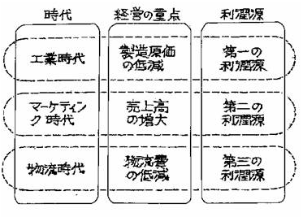

第一章 物流概述
案例一：第三利润源理论渊源
1970年，日本早稻田大学教授、权威物流成本研究学者西泽修先生提出了“第三利润源”说。
西泽修教授在他的著作《物流--降低成本的关键》中谈到，企业的利润源泉随着时代的发展和企业经营重点的转移而变化。日本1950年因朝鲜战争受到美国的经济援助和技术支持，很快实现了企业机械化、自动化生产。当时日本正处于工业化大生产时期，企业的经营重点放在了降低制造成本上，这便是日本二次世界大战后企业经营的第一利润源。然而，依靠自动化生产手段制造出来的大量产品，引起了市场泛滥，产生了对大量销售的需求。于是，日本1955年从美国引进了市场营销技术，日本迎来了市场营销时代。这一时期，企业顺应日本政府经济高速增长政策，把增加销售额作为企业的经营重点。这便是日本第二次世界大战后企业经营的第二个利润源。1965年起，日本政府开始重视物流。1970年开始，产业界大举向物流进军，日本又进入了物流发展时代。这一时期，降低制造成本已经有限，增加销售额也已经走到尽头，渴望寻求新的利润源，物流成本的降低使“第三利润源”的提法恰恰符合当时企业经营的需要，因而“第三利润源”说一提出，就备受关注，广为流传。
西泽修教授“第三利润源”说原书见下图：

表1-1 西泽修教授“第三利润源”说
| 时代 |
经营的重点 |
利润源 |
| 工业时代 |
制造原价的低减 |
第一利润源 |
| 市场营销时代 |
销售额的增大 |
第二利润源 |
| 物流时代 |
物流费的低减 |
第三利润源 |
西泽修教授在书中还谈到，当时他提出"第三利润源"时，是受一个再度公演的著名电影《第三个男人》的启示，因为“第三”隐有“未知”的含义，所以才把降低物流成本说成“未知的第三利润源”。西泽修教授的“第三利润源泉”说，不仅推动了当时日本物流的发展，也对我国和亚太地区的物流发展产生了重要影响。
资料来源：MBA智库百科 http://wiki.mbalib.com/wiki
思考：
- 西泽修教授提出的“第三利润源”说是什么？
- 西泽修教授提出的“第三利润源”说与正文中“第三利润源”说有何区别？
案例二：中国的物流发展与理论研究
960万平方公里上13亿人民的社会再生产、流通与消费所构成的物流实践是中国物流思想发展和理论研究最深广的基础。中国的物流学在社会主义市场经济中得到了迅猛发展，在改革开放和世界经济一体化的浪潮中不断创新与丰富。
（一）中国早期的“物流实践”与“物流思想”
物流概念由来不久，深深扎根于神州沃土的“物流实践”却源远流长。中华民族5000年的文明史无处不闪现出“物流思想”的灵光，世界上工程量最大、修建时间最长的工程-万里长城、世界上最早最长的物流和军事通道-京杭大运河、现代快递的鼻祖-驿运与八百里快递、神奇的物流输送技术-木牛流马等一项项绝无仅有的伟大的“物流工程”充分展现出我们先人的智慧，并为世界范围内的物流理论和物流技术的发展奠定了深厚的基础，提供了良好的借鉴。远古的丝绸之路和郑和七下西洋的史篇，是冲出国门走向世界进行世界范围内物流活动的见证，可以说是世界上最远古的供应链的雏形。从以上中国古代的物流实践可以看出，虽然我们的祖先并没有明确地提出物流或者类似的概念，但是这些伟大的成就却一一闪耀着早期关于物流的智慧。可见，在中国丰富的历史内涵中，积累了丰富的早期物流实践经验和潜在的物流思想，这也为中国现代物流理论的形成和发展提供了有益的基础和借鉴。
（二）中国现代物流的发展历程
中国物流事业的发展是与我国不同经济发展阶段相联系的，国富民强必然导致物流业的蓬勃发展。我国物流事业大致在下述几个阶段中得到不同程度的发展。
1、中国现代物流发展的萌芽期
1949～1965年期间，国民经济尚处在恢复性发展时期，工农业生产水平较低，经济基础较薄弱。由于我国借鉴了前苏联的经济管理体制模式，物流功能按行业、按部门形成条块分割局面。在生产单位里虽然设立了相应的采购供应、销售和生产组织部门，但其完全是被动地服从于各级的计划而已，企业物流的各环节还处于各自为政而无系统可言；在流通部门开始建立数量不多的储运公司和功能单一的仓库；交通运输业处在恢复和初步发展时期，虽然修建了武汉长江大桥、一些公路国道、部分铁路线路等交通基础设施，但整体运输能力和水平等仍很落后，成为经济发展的瓶颈；物料搬运和仓储环节比较落后，物流业远远不能适应工农业生产和人民生活水平发展的需要。随着生产的发展，初步建立了物资流通网络系统，在物流管理方面也采取了一些新的措施，如组织定点供应、试行按经济区域统一组织市场供应等，初步形成了单项物流功能。
在该阶段，国家按行业组建成立众多的科学研究院，如铁道科学院、交通科学院等进行本行业的总体规划设计，而新建工厂时也只是进行总图设计，缺乏物流系统理论思想的指导，因而为现今企业的物流流程重组和企业物流现代化增加了难度。起重运输机械、机电自动化、冶金自动化等一些技术开发与应用研究所进行的各种物流技术与装备的开发及应用研究，如物料输送技术、装卸技术、存储技术基本能满足企业基本物流活动的需要。
在上海交大、北京科大、大连理工大、太原机械学院等高等院校中设置了起重运输机械、港口机械、工程机械、包装机械等与物流技术装备相关的专业，进行服务于某一行业单项物流活动的理论和技术研究与开发。
此阶段中，“物流”还是一种潜意识，“物流功能”被动地服务于工商企业，还没有形成真正的物流理念，系统的物流理论还属空白。
2、物流发展的蠕动期
1966～1977年期间，持续十年的动乱给国家在经济上各方面都造成了严重的损害和制约。物流业的发展基本处于停滞状态，流通渠道单一化，从整体上看物流基础设施还是取得了一定的发展。这期间修建了迄今还足以引为自豪的一些物流基础设施项目建设，如南京长江大桥、铁路、公路、港口等。此外，还修建了大批“小三线”仓储设施。在这期间，物流理论的研究和应用基本处于停顿状态。
3、物流学作为一门独立学科确立，现代物流启动期
1978～1990年，在此期间我国实行了改革开放政策，国民经济特别是物流业随着国内商品流通和国际贸易的不断扩大而得到了较快发展，取得了显著成绩。尤其是运输业、仓储业、包装业的发展较快，不仅新建了大量的铁路、公路、港口、码头、仓库、机场等物流基础设施，而且提高了物流技术装备水平，同时开展了水泥、粮食的散装运输、集装箱运输和联合运输等，开始建设立体自动仓库。部分生产企业也开始注重物流问题，设置物流管理和技术部门。
1984年我国成立了第一个专业物流学术团体-中国物流研究会，并于1987年召开第一届年会，揭开了中国物流研究的序幕。之后，其他物流学术团体相继成立，积极有效地组织开展国内国际物流学术交流活动，了解和学习国外先进的物流管理经验。物流学作为一门独立的学科在国内理论界和学术界逐步形成共识并被正式确立，《物流学及其应用》、《物流手册》、《物流数量化方法》、《库存控制》等物流学的专著和译著也相继出版发行，物流学研究悄然开始。
1988年我国召开了第一次物流配送研讨会，结合城市生产资料（如钢材、水泥等）配送，对配送理论及模式进行了探讨；1987年，国内专家组团对美国及日本物流进行了考察，将国际的先进物流理念、物流体系、企业物流和生产物流运作模式介绍到了国内；1986-1990年间，北京科技大学邀请日、美、徳、澳等国物流专家来华讲学，并组织八届物流研讨班，对企业物流、生产物流、物流技术装备等进行了较深入探讨，并率先对冶金企业进行物流系统诊断，对宣传物流理念、传播物流思想都收到很好的效果；“中国物资流通”、“中国物资再生”、“商业科技”、“物流科技”、“物流技术”、“仓储管理”、“起重运输机械”等物流专业杂志相继创刊或增加物流方面的内容，在研究宣传物流理念、探讨物流理论、研究物流管理模式、建立我国物流体系及各种物流技术的研究和应用等方面取得了很好效果。
经济管理部门和经济学界逐渐重视流通问题，突破了生产资料不是商品的禁区，开始把 生产资料和生活资料流通都看作商品流通，并从整体上进行研究。
在此阶段，我国经济界、产业界和学术界结合我国国情和长期广泛的物流实践，借鉴国外先进的物流理论和经验，研究和探索我国物流学的发展，我国物流学框架已基本初步形成。
4、物流的系统化研究与发展时期
1991～2000年，实施“八五”、“九五”建设，我国国民经济进入高速发展时期,我国物流理论体系初步形成。在此期间，国家为高速发展物流业而采取了一系列重要措施。在“八五”规划中明确地把发展第三产业特别是物流业作为重点，在此期间动工兴建的10项特大型工程中，物流业就占据了5项。我国物流加快了向标准化和国际化方向发展的步伐。由于引进不少家用电器生产线和汽车生产线，国外先进的物流技术得到传播，有力地推动了物流技术水平的提高。各种物流机械新产品不断涌现，成为制造业中引人注目的领域，这一切都为我国物流实现现代化奠定了良好的基础。
北京科技大学、北方交通大学、北京工商大学、北京物资学院等高等院校相继设立物流专业，组建物流研究所，开展了国内外广泛的、大规模的、开放性的物流学术交流、政策研讨、专项研究活动；诸多媒体纷纷开辟物流专栏报道物流动向和开展物流研讨；电子商务、区域经济、第三方物流、配送中心和物流园区的蓬勃发展推动和加速了相关物流理论的研究和应用。
中国物流与采购联合会、中国仓储协会、中国连锁经营协会、中国电子商务协会等物流专业学术组织相继成立，有效地进行了本行业的物流研究和物流现代化的推进工作。《物流学》、《物流学导论》、《现代物流学》、《供应链管理》、《高级物流学》、《军事物流》等一大批物流著作或译著出版，对普及宣传物流理念、发展物流理论和物流科学的建设发展起到极大的作用。
5、融入经济全球化，物流现代化全面启动，我国物流进入快速发展时期
2001年之后，预计5至10年的时期。中国加入WTO，融入经济全球化，现代物流已迅速影响和扩展到国民经济各个领域。第十个五年计划将物流列为要大力发展的新型服务业，并于2001年制定了未来5年物流配送发展规划。同年3月,国务院六部委联合下发“关于我国现代物流发展的若干意见”的通知。同年6月和8月，在上海召开“现代物流工作座谈会”及国家经贸委建立“现代物流工作重点企业联系制度”。2002年1月,国务院批准召开的“推进物流现代化”现场会等。一系列国家最高级的物流活动表明我国加快发展物流业的决心，标志我国物流现代化全面启动。
连续几届的“中国国际电子商务大会”和“中国国际物流高峰会”及各种物流论坛、物流研讨会、物流技术展示会等在物流理论探讨、物流体系建立、物流运作模式、物流管理等方面取得了长足进展。
北京、上海、广州、天津、安徽等一大批省市结合区域经济发展进行物流系统规划，并投巨资建设物流基础设施、筹建大型物流港和物流园区，建设物流中心城市等；深圳等地区将物流作为21世纪经济发展的支柱产业；各行业中，铁路第四次大面积提速、中国邮政形成全国最大的快递服务网络、中远以航运为依托作为全球物流经营人而提供第三方物流超值服务；我国首家由政府（外经贸部）、企业（大田集团）和高校（对外经济贸易大学）三方联手建立“物流研究中心”；海尔、红塔、通用和神龙等明星企业都开始进行物流系统重组或再造，构建具有中国特色的现代物流管理模式；以30万Km的电信网络光缆、62万个端口容量的四大骨干网络和覆盖率达到90%为标志的迅速发展的信息技术，与我国物流信息交流、管理和控制形成互动发展的趋势。
2001年8月，国家标准“物流术语”付诸实施,输送、存储、搬运、编码与识别等各种物流技术或装备的标准也不断进行修改和完善。这些物流的标准化的基础工作都极大地推进我国现代化物流的发展，并为与国际接轨和交流奠定了基础。
国营、集体及个体物流企业的重组、改制和蓬勃兴起，形成了我国现代物流全面发展的局面。Maersk、Ups、Exel、APL、佐川急便等世界知名物流业巨头纷纷以独资或合作的方式抢滩中国物流市场。这种国内外物流业的相互合作、竞争、渗透和融合，极大地促进了我国现代物流的发展，极大地丰富了我国社会主义市场经济特色的物流理论。以《物流系统论》为代表的一大批物流新作，更加系统、深入地归纳总结了我国物流学及物流技术的发展、研究成果和实践经验，是我国物流理论与应用逐步趋向成熟的标志。
中国物流发展到今天的水平，从物流学的角度来看具有如下的特点：中国物流学的发展具有经济体制改革和国民经济不同发展阶段的印痕，时至今日已具有社会主义商品经济的特点。我国物流学是在大规模全方位的企业转型、改制、重组和技术创新中形成、发展和丰富的，具有鲜明的、跳跃式发展的中国特色；我国物流学的发展是经济界、产业界、学术界、各级政府和全社会的共同参与并互相影响和促进的，各种物流论著、译著、杂志、报刊呈现出“百花齐放，放百家争鸣”的良好学术氛围。
资料来源：（注：稍有删改）《2005年中国物流年鉴》
思考：
- 我国古代著名的物流实践有哪些？
- 建国后我国物流发展过程分为哪几个阶段？各具有什么特点？
第二章 包装
案例一：包装不当付出昂贵学费
2004年安徽省绩溪县人民医院利用德国贷款购买了一套进口医疗设备，包括CT机、500mAX光机、C形臂X光机，均为德国某公司生产。
2005年7月11日，这批货物由中外运安徽分公司的两辆厢式货车从上海运出，车厢外用雨布防潮。途中突遇暴雨。到达目的地时，德国公司、运输公司、医院三方同时在场监视卸货，当场发现一部货车的货物外包装被雨水淋湿。当日，检验检疫人员赶到现场，勘查后发现，这个车厢装有4只包装箱：2只木箱、2只纸箱。纸箱被雨水淋湿变形，内部设备可以窥见。其中一只纸箱内无任何防潮保护设施，另一只只有塑料膜保护。
随后安徽局检验检疫人员对这批货物开箱检验，确认木质包装中的500mAX光机、C形臂X光机外包装虽然受潮，但内部有塑料真空包装并添加防潮剂，真空包装内还有两层密封包装，设备保护完好，可以开始进入安装检验程序。而纸箱包装箱内均为CT机的核心部件，价值占整套设备的三分之一。恰恰是最重要的部分，由于严重受潮，已经无法安装。
这是一起因包装使用不当，导致货物受损的问题。外方违反了双方签订的合同中关于包装“能适应气候变化、防潮、抗震及防粗鲁搬运”的规定。
鉴于德国政府贷款项目购买德国医疗设备的做法在全国尚有多家，为帮助德国公司改进包装，防止此类事件再次发生，安徽检验检疫局立即将此事向国家质检总局报告，建议对德国该公司的Emotion型CT的包装进行风险预警通告。同时，依法出具对外索赔证书，支持进口单位对外索赔。
谈判并不轻松。德国公司坚持认为导致货物残损的原因是天灾，而不是人祸，损失应当由保险公司赔偿。为此，检验检疫人员从维护贸易各方合法权益的立场出发，多次与德国公司相关人员交流，宣传我国的法律和相关惯例，说明检验检疫部门出具证书的依据，坚持应由德国公司承担全部责任。外方终于认赔。
2005年10月2日，更换后全新的CT机全部到货，价值290万元人民币。经检验发现，此次货物的外包装全部更换为木质包装，内包装增加了防潮防湿保护。德国公司从这个案例中汲取了付出“高昂的学费”所取得的教训。
资料来源： http://info.jctrans.com/huoyun/hyal/20051031176626.shtml
思考：
- 在本案例中，CT机的核心部件为何会损坏？
- 商品的包装设计如何能确保包装的保护功能？
案例二：日本包装减量化的典型案例
2005年12月，上海市包协接待了日本包协“包装与环保”代表团，中日包装专家就包装、包装废弃物、环境等问题开展了交流。
索尼公司基于“Reduce，Reuse，Recycle，Replace”的四原则来推进该公司的产品包装。他们不但遵循“减量化、再使用、再循环”循环经济的“3R”原则，而且还在替代使用（replace）上想办法，对产品包装进行改进。我们来看几个实例。1998年该公司对大型号的电视机的泡沫塑料材料（EPS）缓冲包装材料进行改进，采用八块小的EPS材料分割式包装来缓冲防震，减少了40%EPS的使用；有的产品前面使用EPS材料，后面使用瓦楞纸板材料，并在外包装采用特殊形状的瓦楞纸板箱，以节约资源；另外对小型号的电视机采用纸浆模塑材料替代原来的EPS材料。
该企业产品包装贯彻环境意识的四原则，即包装材料减量化、使用后包装体积减少、再循环使用、减轻环境污染的原则。
（1）包装材料减量化原则采用：减少容器厚度、薄膜化、削减层数、变更包装材料等方法；
（2）使用后包装体积减少原则采用：箱体凹槽、纸板箱表面压痕、变更包装材料等方法，产品案例见，此饮料瓶使用完毕后，体积变得很小，方便回收；
（3）再循环使用原则：例如采用易分离的纸容器，纸盒里面放塑料薄膜，使用完毕后，纸、塑分离，减少废弃物，方面处理；还有一种可易分离的热塑成型的容器。
（4）减轻环境污染原则：该企业在包装产品的材料、工艺等方面进行改进，减少生产过程中二氧化碳（CO2）的排放量，保护环境。
三、东洋制罐株式会社的包装产品
由东洋制罐开发的塑胶金属复合罐TULC（Toyo Ultimate Can）罐，以PET及铁皮合成之二片罐，主要使用对象是饮料罐。这种复合罐既节约材料又易于再循环，在制作过程中低能耗、低消耗，属于环境友好型产品。东洋制罐还研发生产一种超轻级的玻璃瓶。像用这种材料生产的187毫升的牛奶瓶的厚度只有1.63毫米，89克重，普通牛奶瓶厚度为2.26毫米，重130克，比普通瓶轻40%，可反复使用40次以上。该公司还生产不含木纤维的纸杯和可生物降解的纸塑杯子。东洋制罐为了使塑料包装桶、瓶在使用后方便处理，减少体积，在塑料桶上设计几根环形折痕，废弃时可很方便折叠缩小体积，这类塑料桶(瓶)种类多达从500毫升到10升容积等品种。
从以上几家日本公司包装产品的实际案例可以清楚地看到日本同行在包装减量化方面做了大量富有成效的研究、开发。国家发改委领导日前指出在我国的包装工业高速发展过程中，同时也出现了一些问题。一是许多企业未摆脱高投入、高消耗、高污染和低产出的粗放型经营模式；部分商品存在包装过度的现象；二是包装物回收率低，除部分（如PET瓶和饮料罐）回收利用情况较好外，其他类型包装物的回收利用率相对较低；三是资源浪费严重，大量废弃包装物除增加了城市生活垃圾处理的负担外，还浪费了大量的资源；四是我国现有的包装物回收渠道比较混乱，原有的以单一的政府行为为依托的回收系统和渠道不畅通，以市场为依托的规范的回收网络尚未建立；五是包装物再生利用技术落后，资源的再生利用率低，而且存在较为严重的二次污染。这些问题的存在，不仅与中央提出的建设资源节约型、环境友好型社会的要求不符，而且制约着包装业的发展。
资料来源： http://www.foodqs.com/news/gjspzs01/200672715494.htm
思考：
- 日本企业为何要进行包装减量化？
- 我国的包装工业存在哪些问题？
第三章 装卸搬运
案例一：联华便利物流中心的装卸搬运系统
联华公司创建于 1991 年 5 月，是上海首家
发展连锁经营的商业公司。经过 11 年的发展，已成为中国
最大的连锁商业企业。2001 年销售额突破140 亿元，连续 3 年位
居全国零售业第一。联华公司的快速发展，离不开高效便捷的物流配
送中心的大力支持。目前，联华共有 4 个配送中心，分别是2 个常温配送中心、1
个便利物流中心、1 个生鲜加工配送中心，总面积7 万余平方米。
联华便利物流中心总面积 8 000 平方米，由 4层楼的复式结构组成。
为了实现货物的装卸搬运，配置的主要装卸搬运机械设备主要为：电动叉车 8辆、
手动托盘搬运车 20 辆、垂直升降机 2 台、笼车 1 000 辆、辊道输送机 5 条、数字
拣选设备 2 400 套。在装卸搬运时，操作过程如下：对来货卸下后，把其装在托盘上
，由手动叉车将货物搬运至入库运载处，入库运载装置上升，将货物送上入库输送带。当
接到向第一层搬送指示的托盘在经过升降机平台时，不再需要上下搬
运，将直接从当前位置经过一层的入库输送带自动分配到一层入库区等待入库；接到向
二至四层搬送指示的托盘，将由托盘垂直升降机自动传输到所需楼层。当升降机到达
指定楼层时，由各层的入库输送带自动搬送货物至入库区。货物下平台时，由叉车
从输送带上取下托盘入库。出库时，根据订单进行拣选配货，拣选后的出库货物用
笼车装载，由各层平台通过笼车垂直输送机送至一层的出货区，装入相应的运输车上。
先进实用的装卸搬运系统，为联华便利店的发展提供了强大的支持，使联华便利物流运
作能力和效率大大提高。
资料来源：刘万韬.现代物流管理概论[M].北京：中国传媒大学出版社，2008, P77
思考： 1、分析联华便利物流中心装卸搬运作业的具体内容，并说明是如何实现这些装卸搬运作业的？
2、你认为联华便利物流中心装卸搬运系统有改进的余地吗？假如有，如何改进？
案例二：云南双鹤医药的装卸搬运环节分析
云南双鹤医药有限公司是北京双鹤这艘医药航母部署在西南战区的一艘战舰，是一个以市场为核心、以现代医药科技为先导、以金融支持为框架的新型公司，是西南地区经营药品品种较多、较全的医药专业公司。公司成立以来，效益一直稳居云南同行业前列，属下有一个制药厂，9个医药经营分公司，30个医药零售连锁药店。它有着庞大的销售网络，该网络以昆明为中心，辐射整个云南省乃至全国，包括医疗单位网络、商业调拨网络和零售连锁网络。公司预计在2002年完成“销售3个亿，利润300万元，销售双鹤产品3000万”的任务目标。
虽然云南双鹤已形成规模化的产品生产和网络化的市场销售，但其流通过程中物流管理严重滞后，造成物流成本居高不下，不能形成价格优势。这严重阻碍了物流服务的开拓与发展，成为公司业务发展的“瓶颈”。装卸搬运活动是衔接物流各环节活动正常进行的关键，而云南双鹤恰好忽视了这一点。由于搬运设备的现代化程度低，只有几个小型货架和手推车，大多数作业仍处于人工作业为主的原始状态，工作效率低且易损坏物品。另外，仓库设计的不合理，造成长距离的搬运，且库内作业流程混乱，形成重复搬运，大约有70%的无效搬运。这种过多的搬运次数，损坏了商品，也浪费了时间。
资料来源：中国物流网
http://www.chinawuliu.com.cn/oth/content/200709/200724801.html
思考：1、分析装卸搬运环节对企业发展的作用。
2、针对医药企业的特点，请对云南双鹤的搬运系统的改造提出建议和方法。
第四章 仓储保管
案例一：从日本物流发展看我国仓储管理的不足
日本物流的发展，是与仓储管理的变革紧密相联的。丰田汽车制造公司在创业初期，为提高管理效率，降低生产成本，就着手对仓储管理进行改革。丰田在日本有许多联合生产厂家，原来每个厂家生产的零部件都存放在各自管理的仓库中，按一定时间运送到丰田汽车的总成品安装车间所属的仓库。后来，公司把仓库从单个生产厂家中分离出来，成立专门的仓储中心，集中存放和管理零部件，直接供应总成品安装车间。这一变革意义十分重大，它促使日本出现了专门从事仓储管理的社会化物流中心，大大推进了物流的发展。
物流中心上游联接制造企业或进出口免税仓库，下游延伸到分散的各种店铺，日本物流协会(JILS)常务理事稻束原树先生将它形象地比喻为“人的心脏”。日本物流中心的设计一般强调立体化和自动化。
Aotobacks是日本规模最大的物流中心之一，拥有一整套自动化库存管理、高效率分拣传输设备和及时配送的物流系统，每天处理250个店铺近10万份物流配送服务订单。物流中心连老板加在一起不到100人，通常这样的物流系统在发达国家至少需要400人。Aotobacks一个重要的服务理念，就是尽可能减少店铺工作量，让店铺更加专注为顾客服务。因此，物流中心按照店铺的要求，将90%的商品包装拆开，以保证货物到店后能够迅速上货架。
我国仓库资源规模较大，仅流通领域的仓库面积就达3亿多平方米。但我国仓库普遍功能不强，大多只有商品储存功能，很少有物流配送功能，而且分散在各个企业中，仓储管理社会化程度不高。由于我国仓储管理落后，仓储设施资源利用率平均还不到40%，导致物流效率普遍低下。我国商业流通环节的库存平均周期为5天；非制造业(含批发和零售业)库存平均周期是4天。在我国整个商品生产销售中，用于加工制造的时间仅为10%左右，而物流过程占用的时间几乎为90%。因此，我国要发展现代物流，必须对传统仓储企业进行整合和改造，以提高物流服务水平和资产利用效率。
资料来源：锦程物流网 http://info.jctrans.com/zhuanti/zta/9/20055286561.shtml
思考：
此案例中，试分析日本的仓储管理有何可借鉴的经验？
案例二：Team Hanes公司的库存管理
对于运动服装制造商这种类型的企业，一场体育比赛的结果也许会直接影响到次日消费者的购买，一个崇拜偶像的陨落可以引起成千上万件T恤衫的滞销积压。这种需求的不确定性对企业经营及商品计划与控制带来巨大影响。在目前这种零售商与制造商角色难以替换的情况下，怎样保持最低的零售库存来实现商品的快速周转又避免在零售中缺货？怎样在配送中心保持足够库存满足需求中不可预见情况的同时，又不会遭受价格下跌过多而抛售的风险?怎样平衡各类产品生产大批量与需求小批量的成本利益？
美国运动服装制造商TeamHanes公司为此采取了相应措施---为在大型零售店中出售运动衣应用供应商管理库存系统(VMI)。该方案是和零售商更紧密地协作管理各类服装，包括积极地监控和调整商店一级的各种款式服装的库存，根据POS数据，每周进行库存补货，并把带标价签的产品直送商店。通过管理从零售到生产的整个供应链，缩短供货周期，降低库存(如零售商的配送中心)，从而对多变的消费需求更快地反应。TeamHanes的供应商管理系统能够增加零售商与TeamHanes公司间运动衣交易量，然而随着业务的发展，随着产品线扩大且经销产品的零售店的增加，也给供应商管理系统的持续实施带来了挑战。
TeamHanes认识到，要在这个瞬息万变的运动衣市场实现盈利增长，需要一个能够更可靠地满足消费需求且整个系统的库存又比传统方式更少的经营基础。Mercer公司帮助Team Hanes设计了一个业务系统，使公司在发展的时候获得这些供应商管理的利益。
已开发的TeamHanes业务系统，根据消费需求预测，以一体化的方式管理整个供应链，解决了传统方式的不足，以系统化思想来整合供应链中的所有活动。
利用消费需求预测，可每周检查服装零售信息，以调整各种款式服装的库存水平，满足当前的需求，而不是保持若干周销量的库存。
结合商店POS数据和对各款服装库存的调整，每周确定向各零售店铺的发货。这些补充供货在TeamHanes的配送中心拣选后，直接运到商店。这种补充商品的方式降低了中间环节库存维持水平，缩短了订货周期。在配送中心内，对销量大的商品品种采用更为专门的自动化处理技术，进一步降低了成本，提高了反应速度。
根据消费需求预测和对不确定性的分析，在TeamHanes配送中心内，每个品种的库存每周都要再次评定。消费需求趋势方面的变化在相应的时期被自动整合到库存计划中，更好地预防潜在缺货的发生。采取这种方式，改变了传统的“库存以几周计算”的习惯，库存要不断与每周的消费需求预测比较，而不是用过去的平均消耗率来估算。
根据库存与消费需求预测，每个品种的生产计划均要每周进行检查，经预测任一品种低于所需的库存水平时，就安排生产计划。这种方式以一种对需求的前瞻性眼光关注生产计划，能充分满足消费需求，并在问题发作之前就采取措施。
每个品种的生产规模得到优化，以平衡根据每个品种的具体销售特征计算出的经济订货批量和预测消费需求，由此大量生产可以保证，而且成品库存量总是和下几周的预期销量相联系。
零售式样、成品库存水平和生产进度怎样才能既针对每个品种、每周进行的检查，而又不花费大量人力呢?关键在于整个流程真正的自动化。在日复一日的供应链运营中，所有决策能够从消费需求预测中制定。Team Hanes的计算机系统可以为供应链中的每项活动推荐最佳方案。这些建议能够自动执行,如对量小的式样的库存调整,或者为检查作出提示,如生产计划方面。
这个业务系统在业务增长时，能够一致地和可靠地向零售商传达TeamHanes独特的价格建议。它使TeamHanes公司运动装的供应链管理前后衔接，零售商和自己双方在收入和利润上均实现最大化。
资料来源：慧路管理培训网 http://www.witroad.com/viewdown.asp?id=23682
思考：
1、简述TeamHanes公司实行的库存管理模式的特点。
2、该案例对我国企业的仓储管理有何启示？
第五章 运输
案例一：沃尔玛配送中心的运输管理
车队在配送中是很重要的。因为车队的燃料是相当昂贵的，此外还需要请司机。在整个物流过程当中，最昂贵的就是沃尔玛运输这部分。车队省下的成本越多，那么整个供应链当中所节省的钱就越多，让利给消费者的部分也就越多。沃尔玛用一种尽可能大的卡车，大约可能有16米加长的货柜，相当大，比集装箱运输卡车要更长或者更高。如果你过到美国，在公路上可能就会看到有沃尔玛的车队，你会看到它有多大。沃尔玛的车辆，都是自有的，而且这些司机也是沃尔玛的员工。他们在美国各个州之间的高速公路上运行，而且车中的每立方米都填得满满的，这样非常有助于沃尔玛节省成本。
沃尔玛的车队大约有五千名非司机员工，还有3700多名司机。车队每周每一次运输可以达七千到八千公里，而且是三百万公里无事故的。这些卡车也是沃尔玛整个供应链当中的一部分。沃尔玛采用全球定位系统来对车辆进行定位。因此，在任何时候，调度中心都可以知道这些车辆在什么地方，离商店还有多远，同时，他们也可以了解到某个产品运输到了什么地方了，还有多长时间才能运到商店，沃尔玛可以精确到小时。沃尔玛知道卡车在哪里，产品在哪里，就可以提高整个系统的效率。沃尔玛的卡车不仅是比较昂贵的，而且卡车会比较危险，可能会出事故等等。因此，对于运输车队来说，要保证他们的安全，也要保证公路的安全，来减少出事故的危险，沃尔玛口号是“安全第一，礼貌第一”。在运输过程当中，如果其他车的人需要帮助的话，这些卡车司机也经常帮助。卡车司机们都非常遵守交通法规。沃尔玛定期也对公路进行调查。卡车上面都带有公司的号码，如果看到沃尔玛司机的违章，包括越红灯或者违章的驾驶，就可以根据车上的号码来进行报告。而事实上，很多人打来的电话都是表扬沃尔玛的司机，说他们非常有礼貌，而且非常遵守交通规则，这样的公众来信有很多，大都表扬这些司机对于其他开车人的帮助。这些都证明，沃尔玛的司机做得非常好，实际上他们的行动并不是沃尔玛进行的一种公关的活动。对于沃尔玛来说，卡车不出事故，就是节省公司的费用，就是节省成本。
那么，沃尔玛在运输方面有一些什么样的战略和策略呢?沃尔玛都把卡车装得非常满，所有的产品从卡车的底部一直装到最高填得满满的。一些商场，只在白天开门，但是物流部门却是24小时地在进行工作。如果货物晚上送到商店当中，这些商店就可以把它整个卸下来，而不用打扰他们白天的运营。在配送中心，沃尔玛也和这些供货商都定好时间，而且跟商店之间也是定好时间的，都按照运行的时间表来进行。沃尔玛可以对时间进行很好的管理，就可以节省时间、提高效率。运输的产品是用不着对这些商品逐个进行检查。正是因为沃尔玛有这种非常精确、正确的传统，才可以减少成本、节省时间。
那么，供货商怎样来帮沃尔玛一起分担整个过程当中的费用呢?采用沃尔玛的运输系统，他们自己完成运输，因为沃尔玛的运输成本比供货商来进行运输要低。如果他们用沃尔玛的卡车来运输货物的话，这些供货商也可以节省费用。集中配送中心把所有这些因素都集中在一起，这些供货商就节省很多的费用。他们采用沃尔玛的物流配送系统可以对他们进行成本上的节省，而且从厂商到货架的过程。沃尔玛增加的部门并不会增加运作的成本，合理安排反而会降低运作的成本。沃尔玛最终的目的就是将更加物美价廉的产品提供给消费者。当然，如果有些供货商对这个过程不了解，沃尔玛还可以告诉他们怎么样进行日程上的安排。如果他们遵守时间，提高效率的话，对双方都是一个很大的帮助，而且最终让消费者来受益。
资料来源：http://www.sxycjy.com.cn/jpkc/wl2/E5%5C05.PDF
思考：
1、沃尔玛采用了哪些具体方法来提高运输的生产效率？
2、通过案例总结沃尔玛车队管理具体包括哪些内容？
案例二：把脉综合运输体系建设
同一地点，同时拥有机场、火车站和汽车站，人们能够在几种交通工具之间随意换乘；通过电梯等工具，货物能够在很短的时间内从一种交通工具装载到另一种交通工具上；在港口，集装箱等货物能够直接从火车上装载至货轮上……这就是人们盼望已久的无缝衔接，也是综合交通运输体系的具体体现。但在国内，这样的场景尚未出现。
据了解，国际上一般将综合运输定义为长途、全程、无缝、连续的运输过程。综合运输体系则是指将铁路、公路、水运、航空和管道等部门进行综合调整和统筹，统一规划各种不同的运输方式，防止不同运输方式间过度垄断或竞争，避免交通运输设施重复建设和不合理利用，实现各种运输方式的最优整合和利用。
谋求综合
经过长期的超常发展，我国的交通运输已有了长足的进步，但运输的低附加值和低效率却突出存在。据统计，我国货运总量虽然超过了美国，但货运量的每吨价值量却远低于后者；而从运输效率看，国外发达国家平均物流成本占总成本的10%左右，而我国则近20%。
有专家表示，造成这种高成本、低效率的重要原因就是运输资源的分散，而要提高运输效率、降低成本，就必须按照各种运输方式的优势和特点，形成分工协作、有机结合、布局合理、连接贯通的综合交通运输网络。
“在我国铁路、公路、水运、航空和管道等五种运输方式中，各种运输方式在功能作用、技术经济特征等方面有着较大差异。”国家发改委综合运输研究所资深研究员罗仁坚称，“比如铁路以其运能大、运距长等优势，承担了我国中长途的大量客货运输；公路则因具有覆盖面广、门到门运输等特点，更多地承担了中短途客货运输；民航在长途旅客运输中具有速度快的优势，成为我国长途旅客运输的主要承担者之一；水运以其载量大、成本低和污染少等优点，一直是我国大宗货物长途运输尤其是外贸货物运输的主要运输方式；管道运输对保证石油生产持续稳定增长、促进国民经济发展起着日益重要的作用。”“这些运输方式在适应不同的范围、运量、服务要求方面有各自的比较优势和劣势，客观上存在着体系的结构模式选择、不同层次和空间布局中的多种方式优化组合、多种运输方式的系统构建以及运输链一体化服务等问题。而对运输方式不同的选择和组合结果，将直接决定系统能力适应性和效率、资源消耗以及服务水平。”罗仁坚表示， “所以有必要根据交通运输发展规律和技术进步，结合国情进行发展和体系建设，综合发展、综合利用，这样才能够较好地适应国民经济和社会发展；在满足运输需要和提高人们生活质量的同时，有效节约资源。而这也是为什么要发展综合运输、构建综合运输体系的本源。”
着眼市场
谋求综合发展，是发挥交通运输系统的整体效率与效益、解决运输的低附加值和低效率问题的根本途径。但长期以来，我国缺少一个用以指导我国综合交通发展的战略规划，每种运输方式只考虑自身的建设和发展，不同运输方式间难以进行合理的分工协作和有效的衔接配套，各种交通方式内部和方式之间的协调发展问题日益突显出来，特别是在资源、环境、生态等约束条件的压力下，各种运输方式间的协调发展问题尤为突出。
为解决此问题、推进综合交通运输发展，国家自2007年以来先后制定了 《综合交通网中长期发展规划》、《全国沿海港口布局规划》、 《全国内河航道与港口布局规划》、 《全国民用机场布局规划》及 《中长期铁路网规划 （2008年）调整》等规划。然而，面对如此庞大的综合运输发展计划，如何才能确保顺利实现？
对此，国家发改委综合运输研究所副所长汪鸣提出了解决之道：总体而言，在我国确立以社会主义市场经济体制建设为目标的大前提下，综合运输的发展也应在这一框架下寻求解决办法，那就是推进运输的市场化进程。”
运输市场化是通过市场途径解决交通运输资源的合理配置和服务的有效供给问题的重要方式，而市场化的目标就是不断提高市场解决运输发展和服务问题的份额。据了解，我国交通运输发展目前所取得的成就，很大程度上正是得益于交通运输市场化的推进。
“但是运输产品的准公共性特征和不完全的市场特性，又决定了市场存在失灵，需要政府作为参与者介入。同时，政府也不能替代市场，政府规制是推进市场化进程的重要手段，需要明确政府在推进运输市场化上的管理与政策取向，并通过相关法律、法令、规章、制度等，确保具有差异化的交通运输的市场化进程。”汪鸣同时认为，在市场化进程中，政府也应该积极发挥作用。
然而，新成立的交通运输部虽然向综合交通运输管理体制的建立迈出了重要的一步，但我国综合运输管理体制毕竟尚未完全建立。如何使政府规制符合运输市场化的要求，依然是摆在相关部门面前的又一道难题。
汪鸣表示，解决此问题需要在以下几个方面加快政府管理的改革：一是继续推进政企分开，使交通运输企业真正独立自主地融入到公平竞争的市场中去，成为具有活力的运输市场主体；二是全面清理不符合市场经济要求的法律、法规，清除所有交通运输市场化的行政性和政策性障碍；三是加快交通运输运营机制的改革，打破行业垄断，放松管制，实现公平竞争；四是明确产权关系，并以法律形式保护各种合法财产，促进交通运输生产要素通过市场机制进行合理配置。
诸多难点
组建交通运输部、出台一系列综合交通发展规划，国家显然对推动综合交通的发展已是不遗余力。但当前我国综合运输体系建设依然存在诸多难点与重点。
“总体而言，难点在于各种运输方式的有机衔接，发挥各种运输方式单个和整体的效能，提高综合利用的效率。鉴于我国城市化水平已经接近50%，城市交通拥堵的状况有增无减，而城市又是多种运输方式的汇集点，如何依托城市构建高效率的交通运输系统，成为综合运输系统建设的重点和难点。同时，在区域经济中心城市对周边经济发展的带动作用更大的背景，城际之间的运输交流规模不断扩大，城市群的交通也成为发展的重点和难点问题。” 国家发改委综合运输研究所规划室副主任刘斌说。
刘斌认为，城市群交通基础设施的发展，将改变人们对居住、就业、出行时空的理解，进而引发交通需求种类的多样化。随着城市化水平的提高、城市快速客运系统的完善，通勤、通学、商务的交通需求会急剧上升，同时城际间旅游的交通需求也将有较快的增长，私人小汽车出行增长加速。随着城市化进程加快以及机动化迅猛发展，城市交通与城际交通的紧张局面不断加剧，城市群局部地区出现新的瓶颈和新一轮的不适应状态。主要都市圈、主要城际走廊的通行能力不足的问题将加剧。
“由于城市群交通结构不合理，轨道交通不足，城市群交通配置还难以满足不同距离、时间、方式等多层次的旅客出行需求。出入城市群交通、城市群内交通、城市交通、城际交通各层次间相互分离突出。汽车客运站、铁路新站、机场与城市交通的协调，衔接不畅，影响运输服务质量，不适应区域经济一体化的要求。在区域中心城市的铁路、公路客运场站以及与机场等重要集散点布局之间的合理衔接问题一直没有得到很好的解决。”对于目前城市交通中存在的诸多问题刘斌说，“为此，城市群交通发展中需要解决的重点问题主要涉及如下方面：一是运输能力，方式配置；二是城市群交通与跨区交通分工与协作，尤其是轨道交通；三是城市群交通与城市交通衔接与协作，公共交通，站场布局；四是枢纽在城市群的配置，兼顾城市和城市群交通。”
而对于如何解决这些难点与重点，刘斌表示，首先要逐步完善公路网络，提高对城市群交通的适应性，城市道路和干线匹配，以适应机动化需求高速增长的要求；其次发展公共交通，尤其是轨道交通方式，合理配置城市群轨道交通与铁路干线，并实现轨道一体化换乘；再次是机场、港口、站场布局适应城市群交通网络需要，与城市群交通系统衔接，交通流向集约型方式集结。
资料来源：中国交通运输经济信息网http://www.transdata.com.cn/info/infocontent.aspx?infoid=17092
思考：
1、我国综合运输体系建设的难点在哪里？
2、如何推进我国的综合运输体系建设？
第六章 配送
案例一：国内外配送中心比较及我国策略
实践证明，配送是多年来国际物流业创造的最佳服务形式，近几年在我国发展也很快。尤其随着连锁经营热潮方兴未艾，物流配送更加不可或缺，是我国物流业今后相当一个时期发展的重点。配送中心是进行配送活动最主要的硬件设施。对这一领域，国外物流业已经开始进入，并且凭借他们的实力，向我国提出了严峻的挑战。为了解决上述问题，下面重点分析我国配送中心和发达国家配送中心的差距，在此基础上提出我国配送中心发展的建议。
（一）国内外配送中心比较
目前，世界上发达国家和我国配送中心的发展因国情的差异而各具特点。在这里，运用比较分析法，研究、探索当今世界发达国家和中国配送中心的特点，从中具体分析我国配送中心的差距，借鉴经验，作为提出建议的基础。
选取日本、美国、加拿大与中国较先进的上海、台湾地区作为比较分析对象，选择配送中心的产生原因、特色功能、网点布局、设施设备与管理特点作为主要研究内容。
1、产生原因
尽管各国国情不同，但是配送中心的产生原因却有其共性，即：随着商品消费市场的不断发达，仓储周转速度的逐渐加快，过去大批量的货物运输改为多批次少批量，这就造成物流成本上升、城市交通堵塞和环境污染等各项问题。为此，需要采取“配送中心”这种新型高效的物流活动方式。虽然现在我国各地经济发展水平参差不齐，有些地区还不具备建设配送中心的条件，但是一旦上述情况出现，就应及时建立配送中心，避免过大的损失，避免被外商抢先进入。
2、配送中心的特色功能
通常，配送中心应具备的基本功能为：进货和商检功能；保管和库存控制功能；受理订货功能；出库（分拣、配货、包装）功能；流通加工功能；送货功能；信息处理功能。而发达国家的配送中心除了具备基本功能外，为了适应各国的需求特点，还发展了其他专项功能。例如，日本配送中心的特色功能有：通过提高商品质量、增加花色品种、增加供货频率等方式强化供货枢纽的战略功能，通过综合物流管理方式以控制物流成本的功能，通过增强应变能力以适应物流量常随经营规模的发展不断变化的应变功能。美国配送中心的特色功能是特别重视单个消费者服务功能，即尽力满足顾客提出的各种要求。加拿大配送中心的特色功能是重视为批发商和零售商服务的功能。与他们相比，我国的配送中心有的连基本功能都不完善，竞争力较弱。尤其是各国配送中心的特色功能都建立在先进的信息处理功能之上，我国更是有所不及。
3、网点布局、设施设备和管理
日本的配送中心大都选址合理，规模适中，并采用先进的自动分拣系统和无线通讯设备；其选址尽量靠近运输线路；为了减少污染，一般都设在工业区域内。美国主要采用立体仓库以节约地价支出，但配送中心的设施设备大都是机械化、半自动化，不盲目采用全自动设备；同时，还注意采用环保型设施设备，如使用蓄电池叉车以减少环境污染。他们共同的特点是均实现了比较成熟的电脑网络化管理，保证配送即时准确，节约劳动力成本。台湾地区则推崇“本土化物流”观念，认为“自动化”不是万能的，必须考虑自身的财力规模、土地成本、建筑成本、设备成本等条件。
因此，台湾的配送中心多为中小规模的平房仓库，并且采用适合本地区特点的设施设备。他们融合别国实现物流现代化的经验，科技含量相当高；不求千篇一律，而是根据自己的需求出发，缺什么就充实什么。此外，台湾也相当重视物流人才培养。
（二）建设我国现代配送中心
综合以上分析可以看出，我国必须从国情出发，建设具有中国特色的配送中心。
1、各地区要抓住机遇，一旦有利于配送中心产生的因素出现，就应及时建立和发展适合本地区特色的配送中心，尽量抢得先机。
2、将改组老批发企业和传统的储运企业结合起来，重点建设现代化批发网络，完善商品配送中心的功能，将集货、分货、仓储、运输、包装、咨询等服务功能结合起来。尤其是在硬件设施不太发达的现状下，应当更加重视发展先进的信息处理功能，即电子商务。
3、改善配送中心的网点布局。政府在市政规划中要将物流作为总体规划的一个有机组成部分，统一规划，统一运筹，重视环境保护。根据我国国情，发展现代化的配送中心应以现有物流企业为基础，逐步发展大型物流中心与区域性配送中心相结合，建立起多功能化、信息化、优质服务的配送中心。
4、充分利用现有资源，不求大求全，不盲目追求先进技术。例如，我国现有仓库多为平房，可以借鉴台湾“本土化物流”的观念，在此基础上予以改造，节约资金。我国劳动力资源丰富，虽然应当追求现代化，但是也应充分考虑到人员的作用。
5、重视引进外资与先进技术。虽然外商具有很强的竞争力，但是我国物流业若有效地引进资金与技术，就能加快我国配送中心的发展进程，并为将来的发展与竞争打下基础。尤其是应注意引进环保型技术与设施。
6、重视物流人才的培养。由于我国在配送中心运营方面的实践经验不足，人才的培养就更显重要。只有在物流从业人员的素质提高的基础上，才有可能不断增强竞争力，不断学习与应用先进技术、方法，发展出适合我国国情的配送中心。除了学校的人才培养外，还应向日本等国学习，加大培训物流从业人员的力度，建立“注册物流师”制度。
资料来源：（有删改）http://www.itbobo.com/library/344.html
思考：
1、根据此案例，分析国内外配送中心的差距。
2、根据此案例，如何发展我国的配送中心？
案例二：7－11便利店的配送系统
（一）配送系统的演进
一间普通的7－11连锁店一般只有100-200平方米大小，却要提供2-3000种食品，不同的食品有可能来自不同的供应商，运送和保存的要求也各有不同，每一种食品又不能短缺或过剩，而且还要根据顾客的不同需要随时能调整货物的品种，种种要求给连锁店的物流配送提出了很高的要求。一家便利店的成功，很大程度上取决于配送系统的成功。
7－11的物流管理模式先后经历了三个阶段、三种方式的变革。起初，7－11并没有自己的配送中心，它的货物配送是批发商来完成的。以日本的7－11为例，早期日本7－11的供应商都有自己特定的批发商，而且每个批发商一般都只代理一家生产商，这个批发商就是联系7－11和其供应商间的纽带，也是7－11和供应商间传递货物、信息和资金的通道。供应商把自己的产品交给批发商以后，对产品的销售就不再过问，所有的配送和销售都会由批发商来完成。对于7－11而言，批发商就相当于自己的配送中心，它所要做的就是把供应商生产的产品迅速有效地运送到7－11手中。为了自身的发展，批发商需要最大限度地扩大自己的经营，尽力向更多的便利店送货，并且要对整个配送和定货系统做出规划，以满足7－11的需要。
渐渐地，这种分散化的由各个批发商分别送货的方式无法再满足规模日渐扩大的7－11便利店的需要，7－11开始和批发商及合作生产商构建统一的集约化的配送和进货系统。在这种系统之下，7－11改变了以往由多家批发商分别向各个便利点送货的方式，改由一家在一定区域内的特定批发商统一管理该区域内的同类供应商，然后向7－11统一配货，这种方式称为集约化配送。集约化配送有效地降低了批发商的数量，减少了配送环节，为7－11节省了物流费用。
（二）配送中心的好处
特定批发商（又称为窗口批发商）提醒了7－11，何不自己建一个配送中心？与其让别人掌控自己的经脉，不如自己把自己的脉。7－11的物流共同配送系统就这样浮出水面，共同配送中心代替了特定批发商，分别在不同的区域统一集货、统一配送。配送中心有一个电脑网络配送系统，分别与供应商及7－11店铺相连。为了保证不断货，配送中心一般会根据以往的经验保留4天左右的库存，同时，中心的电脑系统每天都会定期收到各个店铺发来的库存报告和要货报告，配送中心把这些报告集中分析，最后形成一张张向不同供应商发出的定单，由电脑网络传给供应商，而供应商则会在预定时间之内向中心派送货物。7－11配送中心在收到所有货物后，对各个店铺所需要的货物分别打包，等待发送。第二天一早，配送车就会从配送中心鱼贯而出，择路向自己区域内的店铺送货。整个配送过程就这样每天循环往复，为7－11连锁店的顺利运行修路铺石。
配送中心的优点还在于7－11从批发商手上夺回了配送的主动权，7－11能随时掌握在途商品、库存货物等数据，对财务信息和供应商的其他信息也能握于股掌之中。对于一个零售企业来说，这些数据都是至关重要的。
有了自己的配送中心，7－11就能和供应商谈价格了。7－11和供应商之间定期会有一次定价谈判，以确定未来一定时间内大部分商品的价格，其中包括供应商的运费和其他费用。一旦确定价格，7－11就省下了每次和供应商讨价还价这一环节，少了口舌之争，多了平稳运行，7－11为自己节省了时间也节省了费用。
（三）配送的细化
随着店铺的扩大和商品的增多，7－11的物流配送越来越复杂，配送时间和配送种类的细分势在必行。以台湾地区的7－11为例，全省的物流配送就细分为出版物、常温食品、低温食品和鲜食食品四个类别的配送，各区域的配送中心需要根据不同商品的特征和需求量每天做出不同频率的配送，以确保食品的新鲜度，以此来吸引更多的顾客。新鲜、即时、便利和不缺货是7－11的配送管理的最大特点，也是各家7－11店铺的最大卖点。
和台湾地区的配送方式一样，日本7－11也是根据食品的保存温度来建立配送体系的。日本7－11对食品的分类是：冷冻型（零下20度），如冰淇淋等；微冷型（5摄氏度），如牛奶、生菜等；恒温型，如罐头、饮料等；暖温型（20摄氏度），如面包、饭食等。不同类型的食品会用不同的方法和设备配送，如各种保温车和冷藏车。由于冷藏车在上下货时经常开关门，容易引起车厢温度的变化和冷藏食品的变质，7－11还专门用一种两仓式货运车来解决这个问题，一个仓中温度的变化不会影响到另一个仓，需冷藏的食品就始终能在需要的低温下配送了。
除了配送设备，不同食品对配送时间和频率也会有不同要求。对于有特殊要求的食品如冰淇淋，7－11会绕过配送中心，由配送车早中晚三次直接从生产商门口拉到各个店铺。对于一般的商品，7－11实行的是一日三次的配送制度，早上3点到7点配送前一天晚上生产的一般食品，早上8点到11点配送前一天晚上生产的特殊食品如牛奶，新鲜蔬菜也属于其中，下午3点到6点配送当天上午生产的食品，这样一日三次的配送频率在保证了商店不缺货的同时，也保证了食品的新鲜度。为了确保各店铺供货的万无一失，配送中心还有一个特别配送制度来和一日三次的配送相搭配。每个店铺都会随时碰到一些特殊情况造成缺货，这时只能向配送中心打电话告急，配送中心则会用安全库存对店铺紧急配送，如果安全库存也已告罄，中心就转而向供应商紧急要货，并且在第一时间送到缺货的店铺手中。
资料来源：华宇物流网
http://www.huayu56.com/xingyewuliu/qitawuliu/20080217/18943_2.html
思考：
1、在此案例中，配送中心的建设给7-11公司带来了哪些好处？
2、7-11的配送系统对我国连锁业有何启示？
第七章 流通加工
案例一：钢材加工配送探索中前行
中国钢铁工业协会名誉会长吴溪淳2010年2月9日出席中钢协举行的新闻发布会时说，2009年中国钢、铁产量和消费量占全球比例大幅度升高。据国际钢铁协会公布的统计数据，2009年，全球产钢12.2亿吨，中国产钢5.68亿吨，中国占46.6%，表观消费量为5.65亿吨，表观消费量占46.4%；2009年，全球产生铁8.98亿吨，中国产生铁5.44亿吨，占全球的60.5 %；中国净进口生铁338万吨，中国生铁表观消费占全球比例为60.9%。
然而，面对高速发展，我国钢铁产业出现了一些不适应的薄弱环节，其中一个环节就是钢材加工配送跟不上发展需要。
钢材的加工配送是一种新型物流服务方式，指加工中心将钢材按照最终用户要求，经过矫正、清理、剪切、冲压等工序，把轧态的钢材加工成下游用户所需的各种半成品或零部件，并通过其仓储、运输系统及时提供给最终用户直接使用。由于其具有社会化、现代化服务所产生的效率高、成本低的优势，对社会和下游企业的巨大效益日益体现，这种物流方式已成为世界发达国家钢材物流的主要模式。
鉴于钢材不能直接消费、必须进行一定加工的特性，加上中国地域辽阔，钢材最终用户需求多样，传统如集贸式的钢材市场流通模式，已经无法满足下游行业提高效率、降低成本的需要，下游行业自己配置钢材加工这种小而全、大而全的模式，由于效率低成本高将会逐步被钢材加工配送的专业物流体系所取代。
在过去的十年里,我国的钢材加工配送主要是外商独资或合资建设的钢材加工配送中心居多，特别是日本和韩国,如以浦项、新日铁为代表的外资钢铁企业和以美达王、住友商事、三井物产为代表的外资商社已基本完成在我国珠江三角洲、长江三角洲和环渤海湾地区的布局设厂。这些外商的钢材加工配送中心主要为家电、汽车、计算机、造船等行业的加工配送服务，通过其高效率低成本服务已占据我国相当一部分高附加值钢材加工市场。我国的钢铁企业也在近年建立了一些加工配送中心，如宝钢在全国建成了21个钢材加工配送中心，其他特大型钢铁企业近两年来处于起步阶段；流通企业建立了少数几家，如五矿钢材有限责任公司建立了3个钢材加工配送中心；江苏省镇江市2006年在长江边上建立惠龙港国际钢铁物流中心，利用镇江水、铁、公、江、海、河六位一体的运输优势，依托港口建设钢材开平、剪切、分条、折弯、热处理、彩涂加工生产线，集钢材贸易、加工、配送为一体，力争将钢材市场通过延伸服务建设成现代化的国际钢铁物流中心。
目前，我国钢材深加工比重低，钢材本身附加值没有得到提升，与下游行业发展结合还不够紧密，使用钢材的综合成材率和劳动生产率还比较低。据了解，世界发达国家钢材的综合深加工比可达50%以上。其中，线材达60%，棒材40%，管材30%，板材70%左右。而我国一般钢材的深加工仅为10%—15%左右。由于钢材深加工比例低，使我国钢材的成材率和使用效率较低，也因此而失去了相当的市场。如何提高我国钢材使用效率和成材率，改进钢铁行业物流方式，加强与用户战略合作，是提升我国钢铁行业竞争力的主要措施之一。
通过钢材的加工配送，将进一步加强钢铁企业与最终用户的战略合作，有利于增强双方共同抵御市场风险的能力，达到共赢的目标。宝钢公司建立钢材加工配送中心的经验是，加工中心首先选址应贴近用户。由于加工中心要为用户提供“量体裁衣”式的延伸增值服务，贴近用户的地理位置不仅能够降低运输成本，而且有利于准确把握、快速响应用户需求。第二，加工中心定位要准确。对于家电、汽车、造船等专业化较强的行业，对加工中心设备的性能也有较高要求。因此，加工中心只有在锁定目标用户的基础上，才能使加工中心的设计、建设工作有的放矢。第三，重视加工中心信息化建设，这不仅仅指加工中心内部的ERP系统，而且包括加工中心之间、加工中心与地区公司之间的信息沟通系统。建立这样的信息高速公路，有利于增强钢厂对渠道的掌控力，也可以增强加工中心体系抵御市场风险的能力。
我国钢铁生产与流通行业已意识到，我国钢材物流的现状与我国作为装备制造业和钢铁生产与消费大国的地位很不适应，应加快现代钢铁物流业建设，大力发展以钢材加工配送为代表的专业物流业，提高我国钢材流通领域的产业集中度，推进钢材生产企业与用户企业的长期战略合作。我国不仅要规划建设好为汽车、造船、家电、交通、建筑、石化和现代农业等行业服务的专业化钢材加工配送中心，也要建设为社会流通行业服务的钢材加工配送中心，满足国民经济各部门对钢材的个性化需求，实现由钢铁大国向钢铁强国的转变。
资料来源：(有删改)深圳物流网 >> 物流走向专业化钢材加工配送探索中前行
http://www.szwl.cn/wuliu21/wl5238.html
思考：
- 分析流通加工在钢铁物流中的重要性。
- 对钢铁产品进行流通加工的主要内容是什么？
- 如何发展我国钢铁物流的流通加工？
案例二：天然气液化运输技术变革
据中国船级社介绍，在国际海运界通行了40 年的液化天然气(LNG) 运输方式目前正面临着一场变革。有关国家目前已着手进行新技术开发，拟用更为安全和方便的海运方式对天然气进行重新包装运输。
日本的NKK（日本钢管公司）现在已经开发出了天然气的水汽化合物生产技术，可以将天然气以固体形态在零下10摄氏度至零下20摄氏度的温度条件下储存并运输，相对传统的LNG运输方式，显得更为方便和安全。据了解，NKK公司目前正在利用大型设备进行相关实验，试验成功后，新技术将尽快实现商用化，投放市场，应用于天然气运输船的建造。
韩国的现代重工与美国的一家天然气储存仓罐专门技术开发公司也于去年下半年签署了合作协议，联手开发压缩天然气运输船。它的技术特点是，将天然气压缩到原气体体积的1/290，将天然气保持在高压仓罐内的压缩状态下进行运输。这种运输方式比LNG运输方式经济，但船舶上的高压储气仓罐却有可能构成安全方面的缺陷。另外，大宇造船海洋公司开发出了被称为是新概念的一种LNG运输船。它的最大优点是，可将岸上接收LNG的一整套复杂设备设施去掉，减少大量投资，可以在陆地上没有LNG接收设施的地区随时供应天然气，机动性好。
日本和韩国的造船企业目前已经在国际船舶市场上掌握了LNG船的主导权，现在他们着手对天然气的运输方式进行技术开发的原因，是希望以新技术开发来确保自己在国际天然气海运市场中运输船建设领域的优势地位，以达到长期发挥市场主导作用的目的。
资料来源：http://www.oilnews.com.cn/gb/misc/2003-06/19/content_203293.htm
吴健主编，现代物流学，北京大学出版社，2010年2月
思考：
- 将天然气液化或固化进行运输是否属于流通加工？为什么？
- 流通加工大多是简单加工，是否需要先进的技术？
第八章 物流信息
案例一：现代物流信息技术构筑UPS核心竞争力
成立于1907年8月28日的美国联合包裹运送服务公司(United Parcel Service，UPS)是世界上最大的配送公司。2000年,联合包裹公司年收入接近300亿美元，其中包裹和单证流量大约35亿件,平均每天向遍布全球的顾客递送1320万件包裹。公司向制造商、批发商、零售商、服务公司以及个人提供各种范围的陆路和空运的包裹和单证的递送服务，以及大量的增值服务。表面上联合包裹公司的核心竞争优势来源于其由15.25万辆卡车和560架飞机组成的运输队伍，而实际上联合包裹公司今天的成功并非仅仅如此。
80年代初，联合包裹公司以其大型的棕色卡车车队和及时的递送服务，控制了美国路面和陆路的包裹速递市场。然而，到了80年代后期，随着竞争对手利用不同的定价策略以及跟踪和开单的创新技术对联合包裹的市场进行蚕食，联合包裹的收入开始下滑。许多大型托运人希望通过单一服务来源提供全程的配送服务，进一步,顾客们希望通过掌握更多的物流信息，以利于自身控制成本和提高效率。随着竞争的白热化，这种服务需求变得越来越迫切。正是基于这种服务需求，联合包裹公司从90年代初开始了致力于物流信息技术的广泛利用和不断升级。今天，提供全面物流信息服务已经成为包裹速递业务中的一个至关重要的核心竞争要素。
（一）联合包裹公司通过应用三项以物流信息技术为基础的服务提高了竞争能力：
第一，条形码和扫描仪使联合包裹公司能够有选择地每周七天、每天24小时地跟踪和报告装运状况，顾客只需拨个免费电话号码，即可获得"地面跟踪"和航空递送这样的增值服务。
第二，联合包裹公司的递送驾驶员现在携带着以数控技术为基础的笔记本电脑到排好顺序的线路上收集递送信息。这种笔记本电脑使驾驶员能够用数字记录装运接受者的签字，以提供收货核实。通过电脑协调驾驶员信息，减少了差错，加快了递送速度。
第三，联合包裹公司最先进的信息技术应用，是创建于1993年的一个全美无线通信网络，该网络使用了55个蜂窝状载波电话。蜂窝状载波电话技术使驾驶员能够把适时跟踪的信息从卡车上传送到联合包裹公司的中央电脑。无线移动技术和系统能够提供电子数据储存，并能恢复跟踪公司在全球范围内的数百万笔递送业务。通过安装卫星地面站和扩大系统，到1997年实时包裹跟踪成为了现实。
以联合包裹为代表的企业应用和推广的物流信息技术是现代物流的核心，是物流现代化的标志。尤其是飞速发展的计算机网络技术的应用使物流信息技术达到新的水平，物流信息技术也是物流技术中发展最快的领域，从数据采集的条形码系统，到办公自动化系统中的微机、互联网，各种终端设备等硬件以及计算机软件等都在日新月异地发展。同时，随着物流信息技术的不断发展，产生了一系列新的物流理念和新的物流经营方式，推进了物流的变革。今天来看，物流信息技术主要由通信、软件、面向行业的业务管理系统三大部分组成。包括基于各种通信方式基础上的移动通信手段、全球卫星定位（GPS）技术、地理信息（GIS）技术、计算机网络技术、自动化仓库管理技术、智能标签技术、条形码及射频技术、信息交换技术等现代尖端科技。在这些尖端技术的支撑下，形成以移动通信、资源管理、监控调度管理、自动化仓储管理、业务管理、客户服务管理、财务处理等多种信息技术集成的一体化现代物流管理体系。譬如，运用卫星定位技术，用户可以随时“看到”自己的货物状态，包括运输货物车辆所处的位置（某座城市的某条道路上）、货物名称、数量、重量等，从而不仅大大提高了监控的“透明度”，降低了货物的空载率，做到资源的最佳配置，而且有利于顾客通过掌握更多的物流信息以控制成本和提高效率。
（二）联合包裹公司通过在三方面推广物流信息技术发挥了核心竞争优势：
在信息技术上,联合包裹已经配备了第三代速递资料收集器III型DIAD，这是业界最先进的手提式计算机，可几乎同时收集和传输实时包裹传递信息，也可让客户及时了解包裹的传送现状。这台DIAD配置了一个内部无线装置，可在所有传递信息输入后立即向联合包裹数据中心发送信息。司机只需扫描包裹上的条形码，获得收件人的签字，输入收件人的姓名，并按动一个键，就可同时完成交易并送出数据。III型DIAD的内部无线装置还在送货车司机和发货人之间建立了双向文本通信。专门负责某个办公大楼或商业中心的司机可缩短约30分钟的上门收货时间。每当接收到一个信息，DIAD角上的指示灯就会闪动，提醒司机注意。这对消费者来说，不仅意味着所寄送的物品能很快发送，还可随时“跟踪”到包裹的行踪。通过这一过程，速递业真正实现了从点到点、户对户的单一速递模式，向除为客户提供传统速递服务外，还包括库房、运输及守候服务等全方位物流服务的发展，从而大大地拓展了传统物流概念。
在信息系统上，联合包裹将应用在美国国内运输货物的物流信息系统，扩展到了所有国际运输货物上。这些物流信息系统包括署名追踪系统及比率运算系统等,其解决方案包括：自动仓库、指纹扫描、光拣技术、产品跟踪和决策软件工具等。这些解决方案从商品原起点流向市场或者最终消费者的供应链上帮助客户改进了业绩，真正实现了双赢。
在信息管理上，最典型的应用是联合包裹在美国国家半导体公司(National Semiconductor)位于新加坡仓库的物流信息管理系统，该系统有效减少了仓储量及节省货品运送时间。今天我们可以看到，在联合包裹物流管理体系中的美国国家半导体公司新加坡仓库，一位管理员像挥动树枝一样将一台扫描仪扫过一箱新制造的电脑芯片。随着这个简单的举动，他启动了高效和自动化、几乎像魔术般的送货程序。这座巨大仓库是由联合包裹的运输奇才们设计建造的。联合包裹的物流信息管理系统将这箱芯片发往码头，而后送上卡车和飞机，接着又是卡车，在短短的12小时内，这些芯片就会送到国家半导体公司的客户---远在万里之外硅谷的个人电脑制造商---手中。在整个途中，芯片中嵌入的电子标签将让客户以高达三英尺的精确度跟踪订货。
由此可见，物流信息技术通过切入物流企业的业务流程来实现对物流企业各生产要素（车、仓、驾等）进行合理组合与高效利用，降低了经营成本，直接产生了明显的经营效益。它有效地把各种零散数据变为商业智慧，赋予了物流企业新型的生产要素--信息，大大提高了物流企业的业务预测和管理能力。通过“点、线、面”的立体式综合管理，实现了物流企业内部一体化和外部供应链的统一管理，有效地帮助物流企业提高了服务质素，提升了物流企业的整体效益。具体地说，它有效地为物流企业解决了单点管理和网络化业务之间的矛盾、成本和客户服务质量之间的矛盾、有限的静态资源和动态市场之间的矛盾，现在和未来预测之间的矛盾等等。
以现代物流信息技术为核心竞争力基础的联合包裹已经在我国北京、上海、广州开办了代表处。1996年6月，联合包裹与中方合作伙伴中国外运集团共同在北京成立其在中国的第一家合资企业。目前该公司在中国有130多名员工，有60多辆带有UPS的车辆奔驰在国内的大街小巷，业务范围已覆盖了190多个城市。2001年1月，联合包裹公司的飞机被允许直飞中国，自从其首班飞机飞抵了上海后,目前联合包裹在北京、上海、深圳都建立了自己的航空基地，每星期有10个货运航班飞往中国。就此，世界物流业巨头联合包裹公司参与到了中国快递行业正方兴未艾的激烈竞争中来。
资料来源：数控调查网 http://www.cncfbi.com/Man/SCM/200706/7151.html
（注：网络原文正文中为联邦快递公司，经多方查证，作者认为应为联合包裹公司。）
思考：
- 联合包裹公司应用到哪些信息技术？
- 信息技术是如何帮助联合包裹公司塑造核心竞争优势的？
案例二：沃尔玛信息技术实践
（一）沃尔玛的信息技术
50年代末，当第一颗人造卫星上天的时候，全世界商业对现代通讯技术还无人问津。而70年代沃尔玛就率先使用了卫星通讯系统，新世纪开始，沃尔玛又投资90亿美元开始实施“互联网统一标准平台”的建设。凭借先发优势、科技实力，沃尔玛的店铺冲出阿肯色州，遍及美国，走向世界。由此可见，与其说她是零售企业，不如说她是科技企业。
沃尔玛领先于竞争对手，先行对零售信息系统进行了非常积极的投资：最早使用计算机跟踪存货（1969年），全面实现S.K.U.单品级库存控制（1974年），最早使用条形码（1980年），最早使用CM品类管理软件（1984年），最早采用EDI（1985年），最早使用无线扫描枪（1988年），最早与宝洁公司（Procter&Gamble）等大供应商实现VMI、ECR产销合作(1989年)。在信息技术的支持下，沃尔玛能够以最低的成本、最优质的服务、最快速的管理反应进行全球运作。尽管信息技术并不是沃尔玛取得成功的充分条件，但它却是沃尔玛成功的必要条件。这些投资都使得沃尔玛可以显著降低成本，大幅提高资本生产率和劳动生产率。
沃尔玛的全球采购战略、配送系统、商品管理、人力资源管理、天天平价战略在业界都是可圈可点的经典案例。可以说，所有的成功都是建立在沃尔玛利用信息技术整合优势资源，信息技术战略与传统物流整合的基础之上。可以说，强大的信息技术和后勤保障体系使它不仅在经营商品，更在生产商店，经营物流。
90年代沃尔玛提出了新的零售业配送理论，开创了零售业的工业化运作新阶段：集中管理的配送中心向各商店提供货源，而不是直接将货品运送到商店。其独特的配送体系，大大降低了成本，加速了存货周转，形成了沃尔玛的核心竞争力。90年代初,沃尔玛就在公司总部建立了庞大的数据中心，全集团的所有店铺、配送中心和经营的所有商品，每天发生的一切与经营有关的购销调存等详细信息，都通过主干网和通信卫星传送到数据中心。任何一家沃尔玛商店都具有自己的终端，并通过卫星与总部相连，在商场设有专门负责排货的部门。沃尔玛每销售一件商品，都会即时通过与收款机相连的电脑记录下来，每天都能清楚地知道实际销售情况，管理人员根据数据中心的信息对日常运营与企业战略铸出分析和决策。
沃尔玛的数据中心已与6000多家供应商建立了联系,从而实现了快速反应的供应商管理库存VMI。厂商通过这套系统可以进入沃尔玛的电脑配销系统和数据中心，直接从P0S得到其供应的商品流通动态状况，如不同店铺及不同商品的销售统计数据、沃尔玛各仓库的存货和调配状况、销售预测、电子邮件与付款通知等等,以此作为安排生产、供货和送货的依据。生产厂商和供应商都可通过这个系统查阅沃尔玛产销计划。这套信息系统为生产商和沃尔玛两方面都带来了巨大的利益。
沃尔玛总部的通讯网络系统使各分店、供应商、配送中心之间的每一进销调存节点都能形成在线作业，使沃尔玛的配送系统高效运转。这套系统的应用，在短短数小时内便可完成“填妥订单、各分店订单汇总、送出订单”的整个流程，大大提高了营业的高效性和准确性。
（二）沃尔玛的整合物流体系
沃尔玛在美国本土已建立62个配送中心，整个公司销售商品85%由这些配送中心供应，而其竞争对手只有约50.65%的商品集中配送。沃尔玛完整的物流系统号称“第二方物流”，相对独立运作。不仅包括配送中心，还有更为复杂的资料输入采购系统、自动补货系统等。其配送中心的平均面积约10万平方米，相当于23个足球场，全部自动化作业，现场作业场面就像大型工厂一样蔚为壮观。
沃尔玛公司共有六种形式的配送中心：一种是“干货”配送中心；第二种是食品中心（相当于我们的“生鲜”）；第三种是山姆会员店配送中心；第四种是服装配送中心；第五种是进口商品配送中心；第六种是退货配送中心（其收益主要来自出售包装箱的收入和供应商支付的手续费）。
其配送中心的基本流程是：供应商将商品送到配送中心后，经过核对采购计划、进行商品检验等程序，分别送到货架的不同位置存放。提出要货计划后，电脑系统将所需商品的存放位置查出，并打印有商店代号的标签。整包装的商品直接由货架上送往传送带，零散的商品由工作台人员取出后也送到传送带上。一般情况下，商店要货的当天就可以将商品送出。
沃尔玛要求他所购买的商品必须带有UPC条形码，从工厂运货回来，卡车将停在配送中心收货处的数十个门口，把货箱放在高速运转的传送带上，在传送过程中经过一系列的激光扫描，读取货箱上的条形码信息。而门店需求的商品被传送到配送中心的另一端，那里有几十辆货车在等着送货。其十多公里长的传送带作业就这样完成了复杂的商品组合。其高效的电脑控制系统，使整个配送中心用人极少。数据的收集、存储和处理系统成为沃尔玛控制商品及其物流的强大武器。
为了满足美国国内3500多个连锁店的配送需要，沃尔玛公司在国内共有近3万个大型集装箱挂车，5500辆大型货运卡车，24小时昼夜不停地工作。每年的运输总量达到77.5亿箱，总行程6.5亿公里。合理调度如此规模的商品采购、库存、物流和销售管理，离不开高科技的手段。为此，沃尔玛公司建立了专门的电脑管理系统、卫星定位系统，拥有世界第一流的先进技术。
全球4500多个店铺的销售、定货、库存情况可以随时调出查问。公司5500辆运输卡车，全部装备了卫星定位系统，每辆车在什么位置，装载什么货物，目的地是什么地方，总部一目了然。这样，可以合理安排运量和路程，最大限度地发挥运输潜力，避免浪费，降低成本，提高效率。
沃尔玛正是通过信息流对物流、资金流的整合、优化和及时处理，实现了有效的物流成本控制。从采购原材料开始到制成最终产品，最后由销售网络把产品送到消费者手中的过程都变得高效有序，实现了商业活动的标准化、专业化、统一化、单纯化，从而达到实现规模效益的目的。
（三）CPFR——以信息流整合物流的产业化基石
英国著名物流专家Martin Christopher认为：现代物流是指经信息技术整合的，实现物质实体从最初供应者向最终需求者运动的最优化的物理过程。利用信息技术整合物流是真正意义上的供应链管理。而沃尔玛是成功的实践者。
传统的ERP在强化企业的财务控制、规范管理和生产计划之余，只能在企业局部解决企业商品销售及其物流管理控制的难题；后ERP时代的信息系统面向电子商务环境和多数据源的信息收集、交换和处理，必将走向建立集中式数据管理的中央处理平台（中央情报局）。
沃尔玛利用信息技术有效地整合物流及其资金流资源，是基于CPFR（合作计划、预测与补给，Collaborative Planning Forecasting and Replenishment，简称CPFR）供应链计划管理模式的理论和实践。1995年，WalMart及其供应商WarnerLambert，以及他的管理软件开发商一起联合成立了零售供应和需求链工作组，进行CPFR研究和应用获得很大成功。在供应链运作的整个过程中，CPFR应用一系列技术模型，对供应链不同客户、不同节点的执行效率进行信息交互式管理和监控，对商品资源、物流资源进行集中的管理和控制。通过共同管理业务过程和共享信息来改善零售商和供应商的伙伴关系，提高采购订单的计划性、提高市场预测的准确度，提高全供应链运作的效率，控制存货周转率，并最终控制物流成本。
优秀的商业管理思想和高技术结合使商业从分散、弱小的传统形象转换为庞大的零售产业、物流产业，甚至信息技术产业的自身形象。沃尔玛创造了零售业工业化经营的新时代。
资料来源：（注：稍有删改）全国物流信息管理标准化技术委员会网站
http://www.tc267.org.cn/news/view.aspx?id=134
思考：
- 沃尔玛应用到哪些物流信息技术？
- 沃尔玛是如何利用信息技术整合其物流运作的？
第九章 物流顾客服务管理
案例一：TNT惠普物流服务
供应链管理是一项全球性的业务，但即使是在惠普这样一个业务运营和供应商遍布全球的大公司里，它的一切革新也只能从某一地开始。今天，在惠普Unix服务器总装厂里，惠普公司正在对其供应链管理方式进行革新。
（一）TNT成为沟通惠普和供应商的桥梁
1999年开始，TNT物流公司成为惠普的第三方物流（3PL）管理商，负责管理零部件仓库和来自世界各地供应商货品的进口运输。随着惠普开始减少直接开支，允许低成本服务商接管原来由惠普自己的员工管理的一些事务，TNT的势力逐步增长。
现在TNT做的所有工作，过去都是惠普自己做的。与使用惠普自己的员工相比，TNT的开支要节省40%。而且，TNT更多使用临时工和兼职人员，这样可以根据订单多少自如伸缩。
惠普在罗斯韦尔的物流合同是由具有25年物流经验的大卫·埃尔韦负责的。1994年到1999年期间，埃尔韦代表4家3PL公司来管理惠普的物流业务，除了TNT物流公司外，另外3家分别是Roadway物流公司、Caliber物流公司和联邦快递物流公司。这3家公司后来由于种种原因没能继续获得惠普的物流合同，其中最主要的一个原因是不能培育出与惠普公司合作的业务伙伴关系。尽管在外包合同中，减少成本、提高效率是最终目标，但另一方面，人际关系也是非常重要的。
TNT管理着惠普的11座仓库，每年的营业额约2600万美元，罗斯韦尔在其中占大部分。位于罗斯韦尔的工厂占地80万平方英尺。由于仓库和生产线是在同一处，所以这种经营又称为“同址”运营。目前在其它许多公司，零部件还需要在仓库和工厂间运来运去，既耗时又费钱。而在罗斯韦尔，配送零件通常只需一辆叉车跑一趟来回。接到要求提取某一零部件的提货单后，一名TNT员工就会在排满了8000种库存产品的巨大货架上找到所要的零部件，然后更改库存记录，最后把零件送到组装线上，通常这只需要30分钟。但在过去，由于仓库和厂房遍布罗斯韦尔全城，运送一趟通常需要两到三个小时。节省的不仅是时间，而且是产品的损耗和破坏。
TNT物流公司除了管理上千万美元的库存，还从惠普员工手中接过了运输管理业务，这在惠普公司历史上尚属首次。TNT将过去众多的运输商减少为寥寥几家。其中Eagle物流公司负责重型产品的国内空运，Schneider公司、US Freightways、Con-Way公司和联邦快递货运公司负责惠普国内运输的70%，Expeditors公司承担亚洲地区的空运，并且是惠普在亚欧地区的货运代理，德迅公司（K&N）在欧洲空运中发挥作用。
在TNT管理运输之前，惠普产品的国际空运通常耗时17天，国内空运需要7～8天，供应商为了赶上配送时间，通常要加夜班。如今，TNT保证在美国境内的运送时间是1～4天，国外的运送时间是4天，99%的产品运送都能按时送达。如果中间出了岔子，惠普将和TNT一起来解决，保证零部件按时送达。
TNT的运输经理就像是沟通惠普采购经理和公司供应商的桥梁。TNT从惠普手中拿到订单后，联系供应商，确保零部件能及时送到惠普的工厂，中间具体的运输过程就是承运商的事了。每周，TNT都对每一条产品线上的国内和国际运输费用开出清单，这在惠普历史上也是从未有过的。仅仅是在与惠普合作的头6个月，TNT就通过减少加急运输，为惠普节省了250万美元。另外，TNT还通过减少运输商的使用、改变运输方式，帮惠普省下了400万美元。同时，TNT还利用旧垫板，而不是像原来租用带垫板的面包车，这又为惠普在半年内省下了50万美元。过去，惠普要租赁大量飞机保证及时运输，但现在TNT只在为了保证生产线继续运转的紧急情况下才使用空运，其余情况下都通过公路运输。
（二）不断调整适应惠普的变革
惠普自身也在进行着变革，公司原来的物流经理都离开了原有岗位。惠普与康柏合并之后，新公司使用的3PL供应商有30多家，遍布全球。新公司希望在近期把这一数目减至15家。合并后，公司对所有的3PL公司都进行合同评估，公司内部对于运营的集中化程度分歧很大。过去惠普都是对每一地的物流单独管理，但现在人们对于本地化还是集中化持有不同的意见。对于TNT来说，必须让当地工厂经理和总部的决策者双方都满意。过去惠普是反对外包的。而在康柏，外包是企业文化的一部分。在合并过程中，TNT必须加倍小心，因为他们通常是和那些在惠普有着二三十年工龄的老员工打交道。
现在惠普康柏已合二为一了，双方的物流业务正慢慢融合。如果康柏在物流方面占上风的话，那么对3PL来说，将会有更多的外包机会，而且业务会越来越集中到少数企业中。
TNT物流公司还替康柏管理着5个卫星枢纽，这和惠普在罗斯韦尔的情况大不相同。这5个仓库的库存由供应商管理，TNT并不掌控库存。而在罗斯韦尔，惠普掌握着所有的库存。
惠普之所以最后选定TNT，并不是因为价格，而是TNT的作风。由于经济下滑、高科技企业受挫，惠普必须紧缩开支。惠普邻近罗斯韦尔的一个80万平方英尺的仓库关闭，一些生产线转移到罗斯韦尔，实际产量比3年前增加20%，但开支增幅只有6%。
TNT物流公司和惠普之间签订了一个颇具激励性的合同。TNT必须在不提价的前提下，达到一系列指标。当TNT成功地把成本减少了12%时，其中的4%作为奖励给予TNT的员工。成本得以缩减，很大程度上得益于TNT在200多名员工中进行的交叉培训。
资料来源：中国市场营销培训网
http://www.cmarn.org/ArticleShow.asp?ArticleID=612
思考：
- TNT物流公司为惠普提供了哪些物流服务？
- TNT物流公司为什么能成为惠普的物流服务供应商？
案例二：雪铁龙公司售后物流服务案例
法国标志——雪铁龙公司十分重视售后物流服务的重要性。根据该公司开展的一份调查研究表明，在100个接受调查的顾客中，对购买的轿车不满意，但是对其提供的零部件售后服务满意的情况下，大约仍然会有45个人保持对该轿车品牌的忠诚度。反之，只有14个人仍然保持品牌忠诚度。这充分说明了售后服务的重要性。换句话说，售后零部件服务对顾客产生的影响要比整车销售服务对顾客产生的影响大得多。同样，维修人员也高度评价高质量售后服务的重要性。他们认为在评定一个零部件供应商的诸多标准中，零部件的可得性排在第一位，紧跟其后的是及时送货率，价格只是排在诸多要素中的第七位。标志——雪铁龙每年大约生产200万辆轿车，其中有60%用于出口。每年20亿美元的销售收入中约有10%左右是来自零部件的销售。随着整车销售市场的竞争日益加剧，而且越来越多的参与者挤入售后服务领域中去，PSA集团更得依赖售后服务体系效率的提高来确保其市场份额。
PSA在法国的经销商当天下午4点以前发出零部件订单，在次日上午9点之前基本上都可以得到满足。PSA的零部件订单满足率（满足的订单/发出的订单）维持在96.1%的水平，对于紧急订单而言该水平可以达到97.6%。1997年PSA通过了ISO9002认证，加强了其质量控制水平。此举使得PSA与1993年的水平相比，其订单出错率减少了50%。平均送货时间与以前相比减少了将近一半，有95%的订单是在5天以内完成的。在过去4年中，PSA的紧急订单满足率一直保持在99%的水平。
随着消费者对于服务质量要求的不断上升，PSA需要不断提高其零部件配送频率和水平，以满足其开发新区域市场的需要，如匈牙利、波兰、斯洛文尼亚等国。同时，尽管由于汽车零部件标准化的推广与普及，但是总的来说，世界范围内的零部件种类和数量还是在不断上升。
随着竞争加剧，各大主机制造厂面临着很大的成本削减压力，而在原材料和人力的挖掘空间已逐渐枯竭时，物流自然而然肩负起了成本削减的重担。通过对物流水平和质量的不断改进与提高，一定程度上PSA得以弥补或可以缓和客户服务水平上升带来的成本上涨效应。
PSA全球范围内只在法国设有2个零部件物流中心仓库。位于Vesoul的仓库用于存储标志、雪铁龙两个系列车型的零部件，面向法国、欧洲和海外市场。而位于Melun的仓库只存储雪铁龙系列产品的零部件，面向法国和海外市场。与这2个物流中心库相匹配的是遍布全球的24个物流分中心，其中有一半是直接受控于PSA设于当地的子公司或分支机构。
PSA希望能够将维修的复杂性、订单的优先级别和配送频率综合进行考虑，不断改进以进一步提升其售后物流网络的效率。实际上，上述的3个要素共同决定了售后物流配送的路径规划水平。在此基础上，PSA采用了一套称之为“2-3-4”的内部管理系统，2表示订单分为常规类和紧急类2类，3表示将运输时间在几个小时和5天内划分为3个等级，4表示将配送频率在2次/天和1次/周间划分为4个水平。
经过近4年的运作，PSA将其售后物流运作成本削减了15%，同时将存储于仓库中的零部件价值量减少了20%。
资料来源：中国汽车物流网http://www.autologistics.org/afersale/ShowArticle.asp?ArticleID=414
思考：
在此案例中，售后物流服务对雪铁龙公司的重要性体现在哪里？
第十章 物流成本管理
案例一：布鲁克林酿酒厂的物流成本管理
一、基本情况
布鲁克林酿酒厂在美国分销布鲁克林拉格和布郎淡色啤酒，并且已经经营了3 年。虽然在美国还没有成为国家名牌，但在日本市场却已创建了一个每年200亿美元的市面。Taiyo资源有限公司是Taiyo石油公司的一家国际附属企业。在这个公司的Keiji Miyanmoto访问布鲁克林酿酒厂之前，该酿酒厂还没有立即将其啤酒出口到日本的计划。Miyanmoto认为，日本消费者会喜欢这种啤酒，并说明布鲁克林酿酒厂与Hiroyo贸易公司全面，讨论在日本的营销业务。Hiroyo贸易公司建议布鲁克林酿酒厂将啤酒航运到日本，并通过广告宣传其进口啤酒具有独一无二的新鲜度。这是一个直销战略，也是一种物流作业，因为高成本使得目前还没有其他酿酒厂通过航空将啤酒出口到日本。
二、物流成本管理
1、布鲁克林酿酒厂运输成本的控制。布鲁克林酿酒厂于1987年11月装运了它的第一箱布鲁克林拉格到达日本，并在最初的几个月里使用了各种航空承运人。最后，日本金刚砂航空公司被选为布鲁克林酿酒厂唯一的航空承运人。金刚砂公司之所以被选中，是因为她向布鲁克林酿酒厂提供了增值服务。金刚砂公司在其J.F.K.国际机场的终点站交付啤酒，并在飞往东京商航上安排运输，金刚砂公司通过其日本报关行办理清关手续。这些服务有助于保证产品完全符合新鲜要求。
2、布鲁克林酿酒厂物流时间与价格的控制。啤酒之所以能达到新鲜的要求，是因为这样的物流作业可以在啤酒酿造后的1周内将啤酒从酿酒厂直接运达顾客手中，而海外装运啤酒的平均订货周期为40天。新鲜的啤酒能够超过一般价值定价，高于海运装运的啤酒价格的5倍。虽然布鲁克林拉格在美国是一种平均价位的啤酒，但在日本，它是一种溢价产品，获得了极高的利润。
3、布鲁克林酿酒厂包装成本控制。布鲁克林酿酒厂改变包装，通过装运小桶装啤酒而不是瓶装啤酒来降低运输成本。虽然小桶重量与瓶的重量相等，但减少了玻璃破碎而使啤酒损毁的机会。此外，小桶啤酒对保护性包装的要求也比较低，这将进一步降低装运成本。
三、物流成本管理的成效
拉格的高价并没有阻碍啤酒在日本的销售。1988年，即其进入日本市场的第一年，布鲁克林酿酒厂取得了50万美元的销售额。1989年销售额增加到100万美元，而1990年则为130万美元，其出口总量占布鲁克林酿酒厂总销售额的10%。
资料来源：吴理门.物流案例与分析.天津大学出版社.2011,第一版
思考：
1、布鲁克林酿酒厂是如何控制物流成本而取得成功的？
2、这一案例对提高企业的市场竞争力有什么启示？
案例二：沃尔玛的成本管理---比对手更好地控制成本
在沃尔玛的超市里，“天天低价”是其最醒目的标签，但只是沃尔玛的表象。
虽然薄利多销是沃尔玛恒久的原则。就像沃尔玛的创始人山姆·沃尔顿的名言：“一件商品，成本8毛，如果标价1元，可是销量却是1.2元时的3倍，我在一件商品上所赚不多，但卖多了，我就有利可图”。
但沃尔玛从来都以合理的利润率决定价格，而非刻意低价。中国国内某些企业也一度把“低价策略”作为目标，却成了价格战的牺牲品。沃尔玛“天天平价”的背后有一整套完善的物流管理系统。因为它的成本永远控制在最低，才得以保持“天天平价”。高效的物流配送体系是沃尔玛保持最大销售量和低成本的存货周转的核心竞争力。
山姆·沃尔顿有句话说：“供应链制胜的关键是——永远都要比对手更好地控制成本”。
沃尔玛起步之初，其商店就一直远离中心城市，大都选址在小城镇和郊区，以避免残酷的商业竞争。但随之而来的难题就是配送问题。供货商大都在中心城市，郊区的配送更为迟缓，从商店发出订单到收到货物，耗时往往要长达30天之久。
这迫使沃尔玛不得不创新配送理念。最终，沃尔玛放弃了通行的直接送货到商店的方式，创建了集中管理的配送中心。沃尔玛的供应商根据各分店的订单将货品送至沃尔玛的配送中心，配送中心则负责完成对商品的筛选、包装和分拣工作。配送中心高度现代化，85%的商品都采用机械处理，大大减少了人工处理商品的费用。
如今，从任何一个配送中心出发，汽车只需一天就能抵达它所服务的商店。当沃尔玛的商店用计算机发出订单，到它的商品补充完毕，这个过程平均只需2天。比以往大大缩短了时日。
沃尔玛中国市场总监曾这样描述沃尔玛的配送中心：“一个面积为110，000平方英尺的建筑，相当于23个足球场那么大。你再把自己能够想象到的各种各样的商品都放进去，从牙膏到电视机，从卫生纸到玩具，应有尽有。”
“在配送中心里，每件货品都贴有条形码，当一件商品储存进来或者运出去时，有一台计算机专门追踪它所处的方位和变动情况。配送中心有600名～800名员工，提供24小时不间断的服务。这些商品通过长约13.7公里的激光控制的传送带在库房里进进出出。激光识别出物品上的条形码，然后把它引向正待当晚完成某家商店定购任务的卡车。任务繁重的时候，这些传送带一天处理约200，000件商品。”
这应验了山姆的那句话：“比对手更好地控制成本”。沃尔玛把货品送到商店的成本低于3，而其竞争对手做同样的事情一般要付出4.5到5。也就是说，当沃尔玛以同样的价格零售同样的商品时，他们比竞争对手多得2.5的利润。
沃尔玛一直没有请第三方的运输公司帮助自己运送货物，而组建了自己的高效的运输车队。至今沃尔玛的机动运输车队是其供货系统的另一无可比拟的优势。沃尔玛已拥有40多个配送中心，4000多辆运货卡车，保证进货从仓库到任何一家商店的时间不超过48小时，相对于其他同业商店平均两周补货一次，沃尔玛可保证分店货架平均一周补两次。沃尔玛可以在全美范围内快速地送货，使沃尔玛各分店即使只维持极少存货也能保持正常销售，从而大大节省了存贮空间和费用。由于这套快捷运输系统的有效运作，沃尔玛85%的商品通过自己的配送中心运输，而竞争对手凯马特只有5%。结果是沃尔玛的销售成本因此低于同行业平均销售成本2%～3%，成为沃尔玛全年低价策略的坚实基石。
沃尔玛的卫星通讯系统也是完善的物流管理系统的重要一环。沃尔玛投资4亿美元由休斯公司发射了一颗商用卫星，实现了全球联网，在全球4000多家店面通过全球网络可在1小时之内对每种商品的库存、上架、销售量全部盘点一遍，并把销售情况传送给上千家供应商。并通知货车司机最新的路况信息，调整车辆送货的最佳线路。
这样沃尔玛通过自己的卫星通讯系统，把配送中心、供应商和每家分店更紧密的联成一体。既提高了工作效率，也降低了成本，把营业的高效和准确提升到及至。也使得沃尔玛超市所售货物在价格上占有绝对优势。
国内的众多零售连锁商，大多通过压榨供货商的利益来赢利。如向供应商收取上架费、服务费等，也使供货商叫苦不迭。沃尔玛一直秉承着传统的“供应琏制胜”的理念。不向供应商收取上架费。
因为沃尔玛绕开中间环节直接从供货商进货，就更加注意保护供应商的利益———以最短时间和供应商结账，帮助供应商改进工艺、提高质量、降低劳动力成本、分享沃尔玛的信息系统等，由此博得了供应商的信赖。
但有业内人士对记者表示，在中国，沃尔玛对供应商的付款结算周期也在延长。在深圳，店面最初的铺货某些费用也要由供应商负责。
此外，沃尔玛的惯常原则是避开中间环节从制造商处直接进货。而2002年9月，沃尔玛中国公司的高级总监艾文纳在厦门也和400多家中小型进出口贸易商洽谈合作事宜。沃尔玛把贸易商当成合作伙伴，依靠贸易商和制造商的亲密关系，以解决沃尔玛的采购问题。虽然，直购是沃尔玛的原则，但降低成本才是根本。如果沃尔玛单个搜寻制造商，采购成本会更高。
2002年，沃尔玛的全球采购办从香港迁到了深圳，10月在上海成立了采购分部。也有意在武汉和天津建立北方区物流配送中心，满足沃尔玛在中国北区各店的配货需求。随着中国零售业、进出口贸易权、物流业的进一步开放，也会有助于沃尔玛中国脚步的提速。
资料来源：http://www.sinoceo.com.cn/qygl/wlgl/20080225/289.html
思考：
1、沃尔玛的成本管理有何特色？
2、对沃尔玛的“天天平价”有何感想？
第十一章 第三方物流
案例一：凯思公司的3PLs的选择步骤
凯思公司(Case Corp)在选择第三方物流供应商时，主要步骤如下：
- 聘请Booy Ahen & Hamilton 咨询公司来检查凯思公司的整个过程，发现公司机遇在于成品库存和交付周期时间的压缩。
- 公司计划整合其全球物流，但自身没有足够的资源和能力。
- 董事会提出3PLs的基本要求：3PLs须提供信息系统使凯思公司能随时对其全球的材料与产品进行检视。
- 选择3PLs花了6个多月。凯思公司首先向26家3PLs发出了整合其全球物流的设计,要求这些公司提供其作业和财务的详细信息。
- 通过对候选3PLs的组织规模、财务结构及其顾客群进行评价，检查其潜在的成本节省额和一系列能力指标，如服务地理范围、体系；仓储和运输；分析3PLs的企业文化是否与凯思公司兼容；以及3PLs是否有完善的基础设施以帮助凯思公司实现准时(JIT)物流战略；3PLs是否有过向类似于凯思公司的客户合作的经历。
- 第一轮筛选过后,凯思公司选择了8-9家3PLs，尔后凯思公司的经理们到这些公司现场考查以做进一步选择。
- 凯思公司原先准备选择单一的3PLs管理其全球物流，但经过初次评选后发现，没有一家3PLs可以提供跨职能的物流一体化服务，而多家3PLs的联盟则可以做到这一点。
- 决定选择多家3PLs，接着是更频繁的现场考查。竞选者需提供完整详尽的投标书。根据投标书，进一步缩少选择范围。
- 选定GATX物流公司、Schneider物流公司和Fritz公司，签订5年合作合同，这也表明凯思公司希望超越传统的交易型关系而与之建立长期的伙伴关系。
将原有的作业交给3PLs并不是一蹴而就的事，这需要时间和耐心。凯思公司与这三家3PLs公司的交接经历了四个阶段：“爬行”阶段、“行走”阶段、联合阶段和四方系统与作业整合阶段。
资料来源：（有改动）MBA智库百科
http://wiki.mbalib.com/wiki/%E7%AC%AC%E4%B8%89%E6%96%B9%E7%89%A9%E6%B5%81%E4%BC%81%E4%B8%9A
思考：
以凯思公司为例，思考企业应如何选择第三方物流供应商？
案例二：第三方物流之科龙的战略性选择
中国目前正在成为世界家电的制造中心。同国际一流的企业比较，物流是制造企业最后也是最有希望降低成本、提高效益的环节。科龙通过参股专业的物流公司，在家电生产企业和物流服务商之间利用资本纽带关系，构建家电物流的平台，开创了国内家电企业向第三方物流转型的路子。
第三方物流是战略性选择
2002年开始，科龙就对中国的冰箱行业进行了产业整合，陆续收购了吉林的基诺尔电器、远东的阿里斯顿设备和杭州的西能冰箱，并在杭州、珠海分别投资建设冰箱生产基地，形成了顺德、珠海等冰箱生产基地和空调生产基地。在两年时间里，聚集起1300万台的冰箱产能，跃居亚洲第一、世界第二。同时，科龙在推行国际化进程中也获得了明显发展。近两年，科龙和美国的惠尔普、伊莱克斯等全球著名品牌进行合作，国际性营销网络覆盖了全球90多个国家和地区。2001年出口6700万美元，到现在已达到5亿美元。科龙通过产业整合和国内外扩张，对物流管理的广度和深度提出了更高要求，原来的物流体系已经远远跟不上发展的需要，因此优化价值链、引入第三方物流成为科龙的战略性选择。
资本打造国内第三方物流平台
2002年，科龙和中远广东公司、无锡小天鹅公司共同出资成立了中国广州安泰达公司，科龙集团控制公司的物流价格管理，物流业务统一交给安泰达公司。同时，科龙和无锡小天鹅形成了互补性的战略关系，充分利用第三方物流。
第三方物流的引入，带来了四个优化和两个延伸。
第一个优化是物流组织整合和流程的优化。改变了过去冰箱、空调、冷柜、小家电四大类产品、子公司物流的独立运作体系，按专业物流部门合并起来，组成了一个物流部门。人员由过去的100多人减少到了50多人。简化的运作流程，引入了“5156物流业务运作信息系统”，全流程数据库通过运输计划和仓储计划统一管理，实现了在途库存以及有效跟踪；第二，物流运输整合和系统的优化。公司原来有一个自有的车队，改制以后全部推向市场。通过联合招标，将科龙旗下的冰箱、空调、冰柜和小家电四类产品的干线运输进行整合。同时，将战略合作方的逆向物流进行捆绑招标，使采购物流、生产物流、分销物流统筹起来，提高了物流的整体效率和效益；第三，物流仓储整合和资源的优化。根据生产计划及时调整原来的作业半径，通过调仓、换仓、拆小取大，形成了四大产品的仓储发运片区，进行集中管理，同时与战略合作方联手进行招标；第四，整个信息资源的整合和效率的优化。
两个延伸：一是物流向二次配送延伸。家电在大城市的竞争非常激烈，目前科龙要把冰箱、小家电推到农村去。根据高、中、低端全面覆盖的营销战略，安泰达公司在一些重点城市尝试开拓二次配送业务，实现以销售指导配送、以配送促进销售的良性循环；二是向外部物流的延伸。安泰达以科龙、小天鹅的物流为平台，开拓了伊莱克斯、惠尔普等业务。
国际第三方物流合作举足轻重
科龙在向国际主流家电制造商迈进的过程中，国际第三方物流的作用举足轻重。一方面，企业需要借助国际第三方物流遍布全球的物流网络和完善的服务经验；另一方面，科龙的高速发展也吸引了国际第三方物流企业的关注，现在一些世界级的船东已成为科龙物流的主要合作伙伴。科龙和国际家电企业在设计制造领域的的战略性合作也相应地延伸到物流方面。比如科龙和美国的美泰克公司合资，这个公司从科龙采购冰箱销售到国外，都是由第三方物流和第四方物流来完成的，整条供应链的运转由这两个专业的物流公司全程服务。
目前，科龙和马士基物流、kline等一些国外知名物流公司进行接触，进行广泛的全球性的物流合作，使国际第三方物流成为科龙国际战略的重要力量。作为一个制造企业，科龙正在利用物流为自己带来更好的效益，物流企业也在为制造商提供服务的过程中获得丰厚的回报。
资料来源： IT粉丝网 http://kao.itfensi.com/occupation/fls/117424126035735.html
思考：
- 科龙公司为什么外包物流？
- 物流外包对科龙公司发展起到了哪些作用？
第十二章 供应链物流管理
案例一：丸井商厦供应链管理案例
丸井商厦：SCM的先行者
丸井是一家总部设在东京、主要面向青年顾客的服装商厦。该公司正在积极推行供应链管理相关业务，包括在交易中使用日本通用商品码(简称“IAN码”)和电子数据交换系统(EDl)、强化换季促销、扩大无店铺销售等。近年来，上述的积极尝试为公司带来了效益的增长，2005年度男女时装销售额都实现了不同程度的增加。因此，公司决定自2006年开始扩大采用上述技术的商品门类和店铺数量，为逐步推行供应链管理打基础。
首先通过JAN码和电子数据交换系统实现卖场信息共享的是男装领域。具体做法是，公司与供应商分享卖场销售信息，并根据销售情况及时对商品策划进行调整，有效地把握了顾客的需求。从结果上看，自2004年10月以来，男装的月销售额都高于上年同期水平。目前，丸井2／3的男装商品使用了JAN码，销售额也占到男装销售总额的80％以上。
换季促销方面，丸井一改以往提前投放的做法，强调“在实需季节大量投放畅销商品”。为了做到这一点，公司积极开展市场调研，以便及时把握顾客的需求。2005年夏换季销售中，公司改变了过去“秋装色彩、夏装面料”的思路，提出了“秋装设计、夏装面料”的构想，衬衫、T恤等商品的销售额均实现了不同程度的增长。
无店铺销售方面，丸井公司积极开发网上购物商品、强化目录营销，在无店铺销售的订货方式中，手机短信的增幅超过互联网。2005年度，丸井的无店铺销售额超过140亿日元，比2004年度增长了20％左右。
公平交易：SCM的前提
代表丸井公司参加2006日本纺织服装供应链管理大会的进货物流部部长黑泽信悟认为，SCM的实质是与客户之间形成“成果共享，风险共担”的机制，因此“如何减少损失成为SCM的重要课题”。与此同时，丸井公司认为“SCM成立的前提是公平交易，如果没有建立在公平交易基础上的诚信体系，供应链管理不可能推广”。
丸井公司从1998年开始就着手与客户探索公平交易的具体规则，对合同格式进行了修改，尤其是对退货处理中的责任问题进行了明确界定，并专门制作了说明书发放给供应商。据介绍，目前公司已经与90％的供应商签订了公平交易合同。在同一时期，丸井公司还致力于改善支付体系，在1997年就实现了支付系统的标准化，2004年全面废除支票结算。2005年，为了避免不正当退货现象的发生，丸井公司形成了退货通报系统，要求所有退货环节必须得到公司和客户的确认。
黑泽信悟指出：在推进供应链管理的过程中，失败案例也不在少数，但与供应商共同推进SCM是零售企业谋求生存的惟一出路，而公平交易是推进供应链管理的前提。可以说，经过三轮的纺织服装企业谈判项目(TA Proiect)，公平交易的重要性已成为参加该项目的56家企业的共识。
合作消化：有效提高销售效率
在形成公平交易规则、建立支付体系和退货管理体系的基础上，丸井公司利用标准化的信息技术，通过与供应商的信息共享开展供应链管理。目前，公司正在积极推进一项“合作消化”(简称“C消化”)的工作。所谓合作消化，是一种进货管理形式，其基本框架是：通过基于JAN码的商品管理、基于纺织品标准的VAN连接和互联网的电子数据交换系统，与供应商实现信息共享，从而实现商品免检。现在，丸井公司实施单件管理的商品已经占总量的55％，其中74％使用了JAN码，已经实现电子数据交换的供应商达到160家。
共同消化的优势在于：通过实施JAN码、电子数据交换和免检制度，与供应商实现单件商品的销售额、库存和商品策划等方面的信息共享。丸井与三阳商会共同开发的“鲁吉尔”牌裤子堪称共同消化的代表性成果。该商品由双方研发人员在信息共享的基础上开发，投放市场后，三阳商会根据丸井提供的销售数据对尺寸、产量及时进行调整，收到了较好的效果。据介绍，鲁吉尔品牌裤子的销售额呈现稳步上升的势头。
通过信息共享实现产销计划调整的成功案例还包括男衬衫的试销。具体做法为，服装生产企业与丸井公司在市场调研的基础上确定市场投放量，之后根据销售动态对产销计划进行调整，同时对衬衫的设计、面料进行微调。据介绍，2005年秋冬，丸井公司将这种销售手法扩大到其他男装商品中，相关商品的销售额比上一年同期增长了14％。
丸井公司的制造零售业务(SPA)也实现了与上游的纺织企业、面料生产企业和缝制工厂的信息共享。2005年夏大众品牌泳装商战中，丸井收集了与面料、款式、质量有关的大量数据，并及时提供给泳装生产企业，经过6次修订才最终确定了商品构成。在2005年夏季泳装销售整体低迷的情况下，丸井的泳装销售额实现了6％的增长。
资料来源：（注：稍有删改）周卫中／编译,中国物流传播网
http://www.china56cb.com.cn/ShowArticle.asp?ArticleID=28202&channelid=53
思考：
1、在此案例中，丸井商厦供应链管理是如何进行的？
2、丸井商厦供应链管理成功实施的关键是什么？
案例二：惠普台式打印机供应链的构建
惠普公司及台式打印机概况
惠普公司成立于1939年。惠普台式机于1988年开始进入市场，并成为惠普公司的主要成功产品之一。但随着台式机销售量的稳步上升（1990年达到600000台，销售额达4亿美元），库存的增长也紧随其后。在实施供应链管理之后，这种情况得到改善。
DeskJet打印机是惠普的主要产品之一。该公司有5个位于不同地点的分支机构负责该种打印机的生产、装配和运输。从原材料到最终产品，生产周期为6个月。在以往的生产和管理方式下，各成品厂装配好通用打印机之后直接进行客户化包装。为了保证顾客订单98%的即时满足率，各成品配送中心需要保证大量的安全库存(一般需要7周的库存量)。产品将分别销往美国、欧洲和亚洲。
存在的问题
惠普打印机的生产、研究开发节点分布于16个国家，销售服务部门节点分布于110个国家。欧洲和亚洲地区对于台式打印机电源供应（电压110伏和220伏的区别，以及插件的不同）、语言（操作手册）等有不同的要求。以前这些都由温哥华的公司完成，北美、欧洲和亚太地区是它的三个分销中心。这样一种生产组织策略，称之为工厂本地化（Factory Localization）。惠普分销商都希望尽可能降低库存，同时尽可能快地满足客户需求。这样，导致惠普公司感到保证供货及时性的压力很大，从而不得不采用备货生产（Make-To-Stock）的模式以保证对分销商供货准时的高可靠性，因而分销中心成为有大量安全库存的库存点。制造中心是一种拉动式的，计划的生成是为了通过JIT模式满足分销中心的目标安全库存，同时它本身也必须拥有一定的零部件、原材料安全库存。
零部件原材料的交货质量（到货时间推迟、错误到货等问题是否存在）、内部业务流程、需求等的不确定性是影响供应链运作的主要因素。这些因素导致不能及时补充分销中心的库存。需求的不确定性导致库存堆积或者分销中心的重复定货。
需要用大约一个月的时间将产品海运到欧洲和亚太分销中心，这么长的提前期导致分销中心没有足够的时间去对快速变化的市场需求作出反应，而且欧洲和亚太地区只能以大量的安全库存来保证对用户需求的满足。
库存占用了大量的流动资金。若某一地区产品缺货，为了应急，可能会将原来为其它地区准备的产品拆开重新包装，造成更大浪费。但是，提高产品需求预测的准确性也是一个主要难点。
任务
减少库存和同时提供高质量的服务成为温哥华惠普公司管理的重点，并着重于供应商管理以降低供应的不确定性，减少机器闲置时间。企业管理者希望在不牺牲顾客服务水平前提下改善这一状况。
解决方案
供应商、制造点（温哥华，Vancouver）、分销中心、经销商和消费者组成惠普台式打印机供应链的各个节点。供应链是一个由采购原材料、把它们转化为中间产品和最终产品、最后交到用户手中的过程所组成的网络。
针对问题重新设计的新供应链中，主要生产制造过程由在温哥华的惠普公司完成，包括印刷电路板组装与测试（PCAT，Printed Circuit Board Assembly and Test）和总机装配（FAT，Final Assembly And Test）。PCAT过程中，电子组件（诸如ASICs、ROM和粗印刷电路板）组装成打印头驱动板，并进行相关的测试；FAT过程中，电动机、电缆、塑料底盘和外壳、齿轮、印刷电路板总装成打印机，并进行测试。其中，各种零部件原材料由惠普的子公司或分布在世界各地的供应商供应。在温哥华生产通用打印机，通用打印机运输到欧洲和亚洲后，再由当地分销中心或代理商加上与地区需求一致的变压器、电源插头和用当地语言写成的说明书，完成整机包装后由当地经销商送到消费者手中。通过将定制化工作推迟到分销中心进行（延迟策略），实现了根据不同用户需求生产不同型号产品的目的。这种生产组织策略，称之为分销中心本地化（D C -Localization）。在产品设计上也做出了一定变化，电源等客户化需求的部件设计成了即插即用的组件，从而改变了以前由温哥华的总机装配厂生产不同型号的产品，保持大量的库存以满足不同需求的情况。为了达到98%的订货服务目标，原来需要7周的成品库存量现在只需要5周的库存量，一年大约可以节约3000万美元，电路板组装与总装厂之间也基本实现无库存生产。同时，打印机总装厂对分销中心实施JIT供应，以使分销中心保持目标库存量（预测销售量+安全库存量）。通过供应链管理，惠普公司实现了降低打印机库存量的目标，提高了服务水平。通过改进供应商管理，减少了因原材料供应而导致的生产不确定性和停工等待时间。
效果
通过重新设计、改进供应链，安全库存周期减少为5周，从而减少了库存总投资的18%，仅这一项改进便可以每年节省3000万美元的存储费用。由于通用打印机的价格低于同类客户化产品，从而又进一步节省了运输、关税等项费用。除了降低成本，客户化延迟使得产品在企业内的生命周期缩短，从而对需求预测不准确性或是外界的需求变化都具有很好的适应性。一旦发现决策错误，可以在不影响顾客利益的情况下以较小的损失较快地加以纠正。
资料来源：
中国大物流网 http://www.all56.com/www/45/2009-06/32703.html
思考：
- 惠普供应链是如何进行改进的？改进后达到了什么效果？
- 什么是延迟策略？改进后的惠普供应链是如何实施延迟策略的？
第十三章 物流管理新理念
案例一：美国零售业的逆向物流管理之路
2002年，美国零售商业的返品货价值约占商品零售总额的6.3%左右。从比例上看，返品占总体的比率虽不是太大，但其所拥有的价值量决不是小数目。美国2000年商业零售总额约为10060亿美元，按此推算，零售商业返品的价值每年至少高达数百亿美元之巨。不菲的返品数量不但占压了巨额的流动资金，增加了商家和厂家的营销成本，而且牵扯了各个营销环节管理者的时间和精力。返品的处理实际上也造成了一定的社会生产力浪费。对返品的物流管理，即是通常所说的逆向物流管理。
美国是较早将逆向物流管理科学化、系统化的国家。20世纪90年代以前，美国零售业界通常也采取由商家自行向生产厂家退货的较原始的返品处理方式。这种方式不但效率低、浪费大，而且返品处理的费用也相当高。据统计，美国零售业原来每年返品处理费用约占销售总成本的4%左右。
（一）逆向物流管理的开端---返品中心
由于美国部分生产厂家不堪返品处理的烦恼，宁可在商品购销合同中预先约定扣除一定的返品比例，而不再接受返品。这也就是日后人们所熟知的“零返品”购销方式。世界最大的日化用品生产商宝洁公司就是“零返品”购销方式的积极倡导者。
1990年开始，美国的一些大型连锁零售商为了提高返品处理效率，按照专门化和集约化的原则，仿照正向物流管理中的商品调配中心的形式，采用逆向思维，分区域设立“返品中心”以集中处理返品业务。这成为逆向物流管理的开始。
（二）返品中心的四个功能
许多美国大型零售公司累计在全美各地设立了近百个规模不等的返品中心。其中，沃尔玛公司就设立了10家，凯玛特公司拥有4家，Universal公司拥有2家，其他如宜家、Target公司等较大的连锁零售商也都有自己的返品中心。此外，一些规模较小的连锁商业公司则采取几家合伙的形式，设立返品处理中心。目前，美国通过返品中心处理的返品已占总数的6成以上，集约化处理已成为逆向物流管理的主导方式。
返品中心的主要功能是：
1、接收系统内各零售店的所有返品。
2、对返品进行甄别。按照返品的实际状况把它们分为：可整修后重新销售；可降价批发销售；可向生产厂家退货；可作慈善捐赠用（在美国慈善捐赠可抵减税收）；可作废品利用及无利用价值等几类，并作相关处理。返品处理中心内设有相当规模的再生工厂，把可整修后重新销售的返品进行整修、包装后重新融入正向物流销售。
3、对返品涉及的资金往来进行统一结算。
4、对各厂家、各销售店、各类商品的返品状况及产生原因、返品的变动趋势等信息进行综合统计分析，并及时向总部提交相关报告。
（三）返品中心对美国零售商的两大贡献
1、提高了返品的流通效率，降低了逆向物流耗费的成本，加速返品资金的回收。据分析，由于采用了返品的集中配送、返品票据的统一处理、发掘废弃商品残值等方式，逆向物流管理每年可为商家降低销售总成本的0.1%-0.3%。以沃尔玛公司为例，通过逆向物流管理每年平均就可节约资金7.3亿多美元。
2、集中处理返品还可以大大减轻零售店和生产厂家的工作量，充分利用零售店卖场空间，同时也有利于收集掌握与返品相关的商业动态。
（四）逆向物流管理的新发展——专业化逆向物流管理公司出现
由于大型零售公司的脚步逐渐向边缘地区延伸，有些零售店的布局相对分散，不利于设立自己的返品中心对逆向物流实行集中管理。出于经济效益的考虑，一些大型零售公司委托从事第三方物流的公司承担逆向物流管理业务。这些公司也由此逐步发展成为以逆向物流管理为主的专业化公司。专门从事逆向物流管理的公司在美国产生于20世纪90年代中期，如Genco公司就是逐步发展起来的一个专业化公司。目前，Genco公司已成为美国逆向物流管理业界的最大型企业。
进入21世纪以后，专业化的逆向物流管理公司的业务得到更加迅猛的发展。到2002年，仅Genco公司就已在美国各地拥有104个返品处理分中心，年处理返品约达400万件。委托该公司处理返品业务的签约商业伙伴超过1500家。
（五）专业化逆向物流管理公司的三大特点
专业化逆向物流管理企业的出现，使逆向物流管理的科学化、集约化程度上升到一个新的高度。这些新型逆向物流管理企业的特点是：
1、同时为多个商家和厂家提供返品处理服务，使得逆向物流管理的规模化效应更加突出。例如，Genco公司同时为在某一地区内处于竞争关系的沃尔玛、凯玛特等多家零售商提供服务，甚至有些其他商家自己设立的返品中心也成了Genco公司的服务对象。
2、专业分工更细，集约化与效率化程度更高。这些专业逆向物流管理公司下又派生出许多专门充当逆向物流经纪人的公司、专门的返品运输公司、专门的返品仓储公司、返品整修公司、残次品销售公司和填埋无价值返品的公司等，分别承担返品处理业务的不同环节。
3、采用了更完善的专业管理技术，以最大限度地回收返品的经济价值。例如，Genco公司把客户购货合同中从涉及的返品合同条件到返品收发、储运、结算、统计等各个环节都纳入统一的计算机系统管理。该公司仅专门从事逆向物流管理软件开发的工程师就有70名，他们开发的逆向物流管理软件“R-log”已成为逆向物流管理业界中使用最普遍的计算机软件。
这些专业化的逆向物流管理公司无疑代表着逆向物流管理的未来和方向。它们的出现也引起了日本、欧洲等零售商业发达国家的重视。日本的一些商业零售商已经着手学习、引进美国的逆向物流管理方法，取得了较好的效果。对于我国零售业界来说，学习借鉴美国先进的逆向物流管理理念和技术，提高我们的逆向物流管理水平，同样也有着一定的积极意义。
资料来源：http://www.i18.cn/article/html/2005/3/7/6171.html
思考：
- 美国大型零售公司设立的返品中心的功能是什么？
- 专业化逆向物流管理企业在处理返品回收上有什么优势？
- 美国零售业的逆向物流管理对我国有何启示？
案例二：圣韵电子精益供应链削减物流成本的利器
随着圣韵电子精益供应链整合的第二期工程的完成，其下属的北京、上海和马来西亚工厂也意味着实现供应链的双向互动功能：圣韵电子全球供应商不仅可看到和自身相关的采购看板，并可通过互联网进行确认和发运。而在此之前，供应商只能通过相应“密码”每周上圣韵公司的电子看板公告牌上查看物料补充信息，却不能实时做出确认和回应。这一转变对于圣韵来说，整个供应链的信息流将更加畅通，与供应商的沟通成本也会因此降低，物料的周转和库存的准备也会更加有效。
（一）ERP后求精益
由于圣韵电子（上海）有限公司的美国总部做出战略决策，将美国本土的制造转移到亚洲，上海工厂也承担起更多的制造业务，因而有了实施ERP的念头。在做了大量的内部需求分析和对市场上的ERP产品调研，圣韵电子最终决定采用思博公司的ERP产品，很快进入实施阶段，并全面运行ERP。由于前期做了相当多的铺垫和业务流程的改造，圣韵电子的ERP实施效果相当明显。但是圣韵电子并不满足于此，而是决心投入精力做两件事：一是对老ERP系统的升级；二是引入思博公司供应链计划与管理模块方案，力求将系统带来的优势扩展到更广的供应商中去。
思博公司分析道，在企业不断完成自身的信息化的进程中，对于各类资源的整合要求越来越高。很多顺利完成内部ERP工程的公司，对外部供应链又有了进一步的需求。这不仅是生产制造型企业自身的提高，同时也是对咨询公司提出的一个重大挑战：能否通过现代化的信息技术，整合供应链，突破企业和其供应商之间的壁垒。
对圣韵电子来说，摩托罗拉等手机制造厂商是他们最大的客户群体，这些客户都或多或少的对圣韵有信息化方面的要求，尤其是电子物流采购这块。圣韵电子称，每周会上摩托罗拉的网站查看，主动发现他们位于德国、匈牙利、墨西哥、中国天津、杭州的工厂是否需要供货，由此我们也想到是否可以对自己的供应商也采用这样的方法来做，极大地降低沟通成本。
圣韵电子的想法和思博公司不谋而合。在顺利完成思博ERP实施后，圣韵电子在供应商整合方面，很自然地又一次同思博公司携手，并由此成为思博公司精益软件Demand Stream在华的第一家用户。圣韵电子提出的一些客户化的要求都将在Demand Stream的实施中或是将来的升级版本中得到体现。
经过前后1个月的实施和客户化工作，圣韵电子顺利进入了Demand Stream在线测试阶段，并成功地完成测试，正式上线使用，并向几家核心供应商试点开放。随后，通过三个月的实施和改进，圣韵电子又逐步推广到所有供应商的范围。
（二）“拉式”供应链
通过信息化的跟进，圣韵电子完成了一次供应链管理的提升。圣韵电子能够建立对供应商6周滚动的物料需求计划，并且由于和ERP系统进行无缝集成，能够产生与企业内部同步的ERP采购计划。同时，供应商的及时送货纪录、供应商合同建立及合同履行情况都一目了然，而且供应商可随时通过互联网得到上述信息。这样一来，供应商和圣韵电子之间运作流畅，减少了大量不必要的浪费。更重要的是，这些都为日后圣韵电子的精益化改造做了大量铺垫，包括内部车间执行和外部供应商拉动两方面。
效果是明显的，一个最显著的例子是圣韵电子生产订单周期变化。通过实施精益供应链管理，以往的生产订单由每周下一次，逐步过渡到每批下一次，再到一天下一次，乃至一天下两次。这样做的好处是物流浪费越来越少，出问题就可以迅速查出在哪个班上的哪个订单，控制成本效果明显。与此同时，由于库存的减少，圣韵电子的仓储也发生了变化，原来满满当当的大仓库面积不断缩小逐渐成为小仓库，到现在库位明确物料可以追踪的立体化仓库。
圣韵电子的供应链管理实施内容是循序渐进的，这和圣韵电子一贯稳健的风格也是相吻合的。第一步，圣韵建立了供应商看板公告牌，这是基于因特网的看板公告牌，用于直接向供应商传达物料补充信息；第二步，圣韵加强供应商绩效管理，将来自ERP系统的报告，通过因特网向供应商提供实时信息；第三步，圣韵加强供应商协作，使供应商之间能够有多种沟通方式；第四步，根据动态看板信号自动生成采购订单；第五步，集成数据收集系统接收订单，然后直接下达到ERP系统。
（三）精益重在自动化
精益制造和精益自动要区别来看，精益制造不一定要ERP系统支持，但精益自动化一定需要ERP系统。精益制造的模式看重的是现场管理，提升管理级别，而精益自动化是要让更多人受益，通过一个信息系统将财务、生产、采购连成一体。一般来说，精益自动化有两种途径：第一种是为精益生产建立单独的系统；第二种是从ERP系统中引伸出来，开发一个适应精益制造的模块。但是两者都存在缺陷，前者很可能会形成一个信息孤岛，而后者只是对ERP的“修修补补”，未必能满足精益的需求。
思博的Demand Stream是彻底独立的系统，但是和市面上主流ERP都可以无缝结合。它是面向制造型企业的精益解决方案，尤其擅长于帮助企业在市场需求波动大、产品定制化和混合程度高、工程技术变化频繁、资源瓶颈多、提前期长、供应链复杂等不太理想的环境中实施精益，从而为更多的企业采用精益生产方式创造了机会，更有效地缩短交货期、降低成本、提高质量、增强柔性和应变能力。
资料来源：http://www.56abc.cn/gb56/content.asp-catid=114698405&contentid=114705599.htm
思考：
- 精益供应链为圣韵电子带来了哪些优势？
- 简述圣韵电子拉式供应链的运作过程。